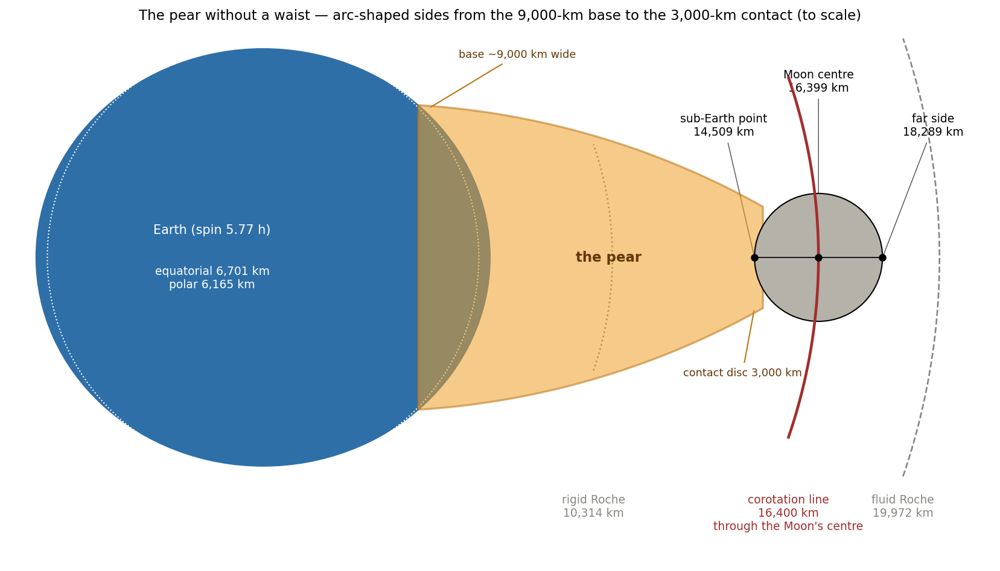
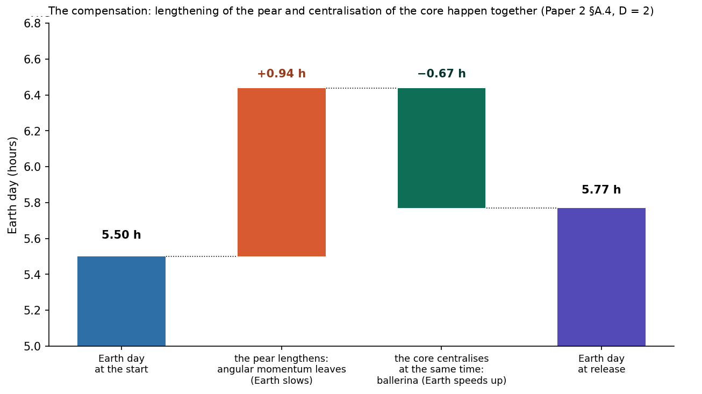
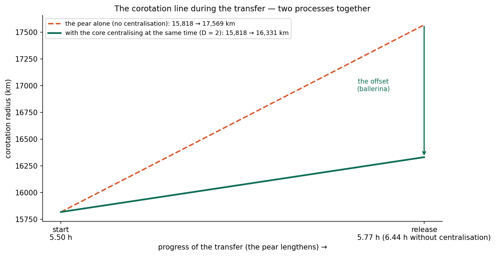
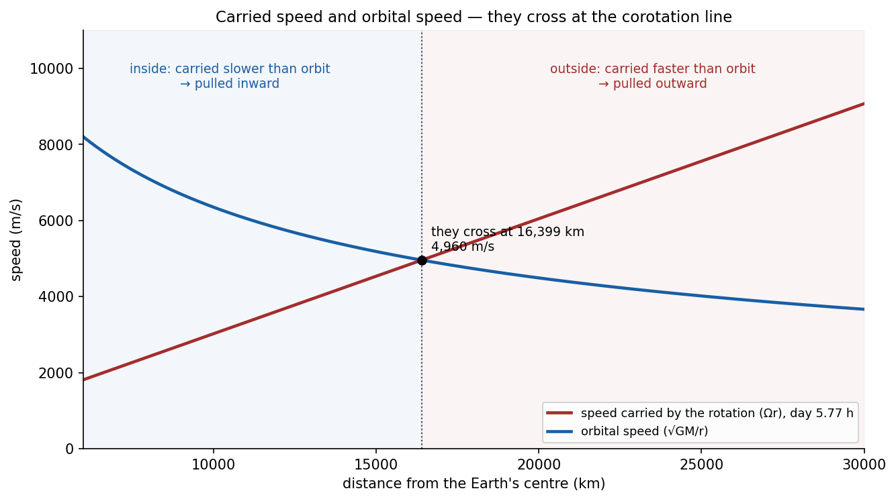
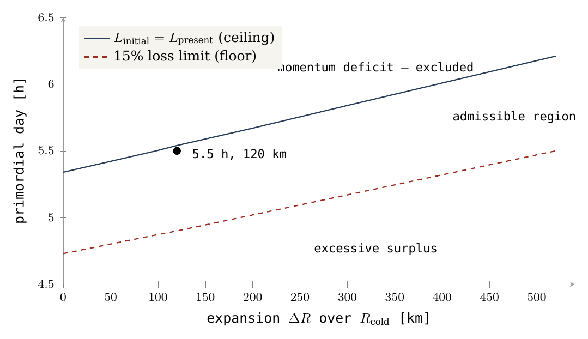
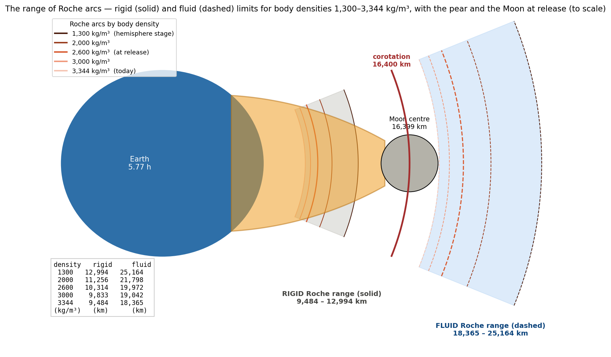
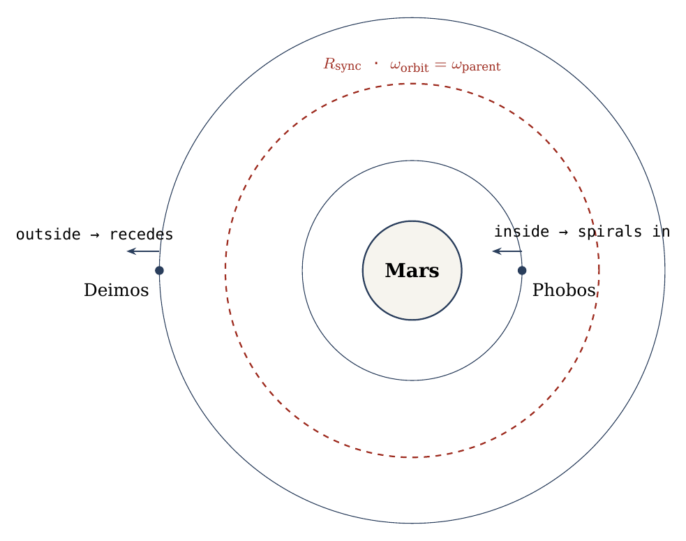
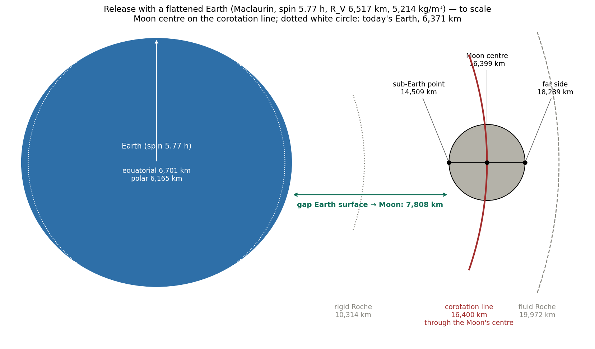
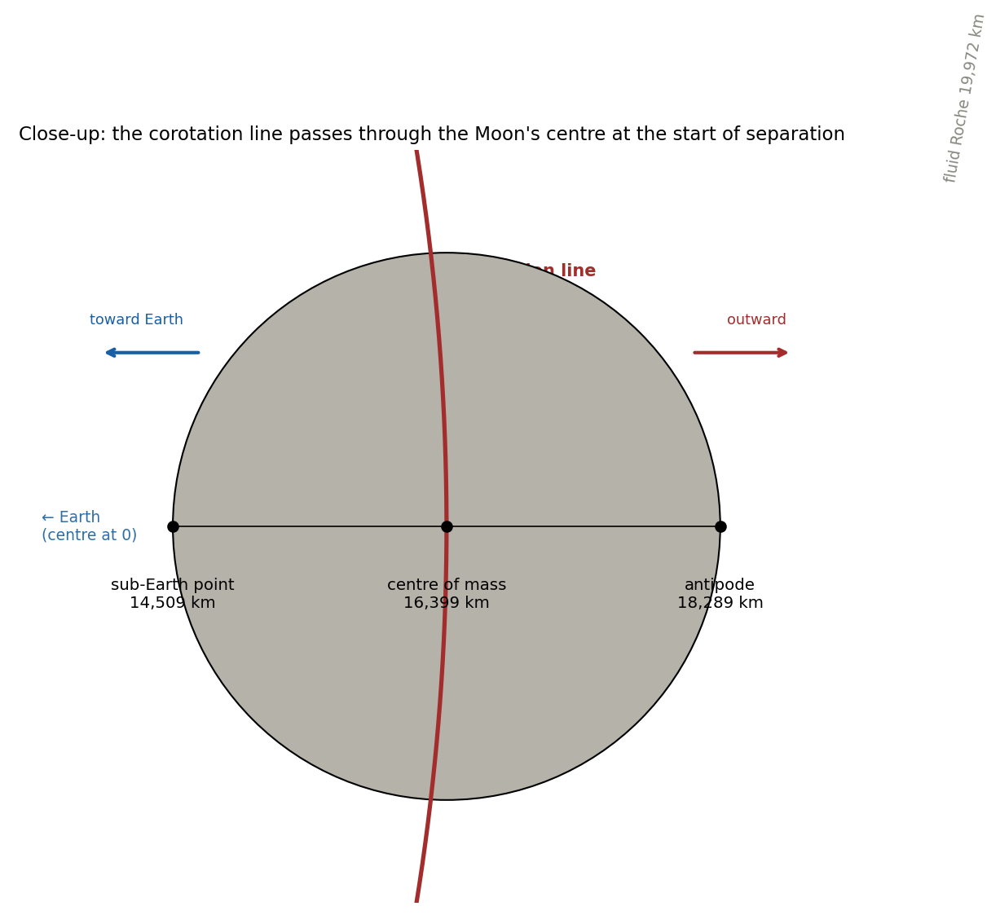

LEF 메커니즘의 원리
공회전과 각운동량
계산 환경 표
이 논문의 계산은 LEF 시나리오에서 초기의 지구형 모천체(원시 지구), 즉 달의 질량이 분리되기 전의 젊은 지구를 기술한다. 과정이 진행되는 동안 계(系)는 변하므로(질량이 한 천체에서 다른 천체로 옮겨 가고, 형태와 자전이 변한다), 아래의 모든 매개변수는 정의된 세 상태 중 하나에 속한다. 즉 질량 분할 이전의 상태, 비교에 쓰이는 계산상의 기준 상태, 또는 방출 시점의 결합된 최종 상태이다. 이 상태들을 구분해 두면 한 시점의 값이 다른 시점에 쓰이는 일을 막을 수 있다. 부록 G에는 전체 환경 E01–E70이 수록되어 있으며, 여기의 표에는 Paper 2에 필요한 양만을 실었다.
표는 세 열로 이루어진다. 매개변수, 그 수치 또는 정의, 그리고 지위이다. 지위는 계에 대한 가정, 모델을 위해 선택한 입력, 이 논문에서 계산한 값, 또는 민감도 시험에만 쓰는 값 가운데 하나이다. 독자는 셋째 열을 보고 어떤 수치가 계산에 입력되고 어떤 수치가 계산에서 산출되는지를 곧바로 구별할 수 있다.
|
매개변수 |
수치 또는 정의 | 지위 |
|---|---|---|
| 계산 시작 시점의 모천체 질량 | 6.0455×1024 kg — 지구와 달의 질량의 합 | 계의 가정, 질량 완전 보존 |
| 이동 후의 모천체 질량 | 5.972×1024 kg | 모델 입력 |
| 이동한 질량 | 7.35×1022 kg | 모델 입력 |
| 초기 자전 주기 | 5.5시간 | 채택한 기준값 |
| 초기 부피 등가 반지름 | 6,517 km | 모델 입력; 채택한 열팽창 120 km 포함 |
| 초기 적도 반지름 | 약 6,721 km | Maclaurin 회전타원체 모델로 계산 |
| 초기 평균 밀도 | 약 5,214 kg/m³ | 질량과 부피로부터 유도 |
| 수지 계산을 위한 초기 구조 | 근사적으로 균질 | 기준 가정이며, 불완전한 분화로부터 내린 결론이 아님 |
| 민감도 시험에서의 최종 구조 | 2층 구조; –, – | 계산된 시나리오 |
| 원래 기준에서의 공회전 | 5.5시간에서 15,818 km, 시험 입자 근사에서 최종 지구 질량의 GM 사용 | 계산상의 정의; 전체 초기 질량을 대입한 것이 아님 |
| 방출 시점의 지구 하루 길이와 공회전선 | 5.77시간; 16,331 km(2체 해 16,399 km), 중심 집중 핵, | §A.4, §B.1 |
| 적도를 벗어난 방출 | 방출 순간의 자전축에 대해 25° | 민감도 시험용 가정이며, 측정된 과거 위도가 아님; 채택한 방출 위도는 22.5°(Paper 4) |
| 로슈 시험에서의 천체 밀도 | 2,600 kg/m³ | 모델 입력; 민감도로 1,500과 3,340을 시험 |
| 온도, 휘발성 물질, 점성 | 영역마다 다름; 승인된 수치 분포 없음 | 현대의 값으로 대체하지 않음 |
| 중력 | 각 상태에서 질량, 거리, 형태에 따라 달라짐 | 과정 전체에 대한 단일 중력값 없음 |
| 구축 기간 | Paper 2에서는 계산하지 않음 | 600 Myr의 시간 창은 시리즈의 작업 시나리오로 유지하며, 측정된 시간이 아님 |
몇몇 행은 설명이 필요하다. 초기 모천체 질량 6.0455×1024 kg은 오늘날 지구와 달의 질량의 합이다. 계에서 어떤 질량도 빠져나가지 않았다고 가정하므로, 달 전체가 한때 지구의 일부였다. 초기 반지름 6,517 km가 오늘날 지구의 반지름보다 큰 것은 젊고 뜨거운 지구가 열적으로 팽창해 있기 때문이며, 채택한 팽창량은 120 km이다. Maclaurin 회전타원체: 자전하는 유체 천체는 적도에서 부풀어 오르며, Maclaurin 모델 — 밀도가 균일한 자전 유체 천체의 고전적 평형 형태, 즉 편평한 구 — 은 자전이 만드는 편평화의 결과로 이 부피를 약 6,721 km의 적도 반지름으로 바꾸어 준다. 시험 입자 근사: 기준 단계에서 방출되는 천체는 중심 질량의 중력장 안에 있는 작은 입자로 취급되므로, 공식에는 지구의 질량만 들어간다. 결합된 2체 값(16,331 km 대신 16,399 km)은 이 단순화의 영향이 얼마나 작은지를 보여 준다. 구조 민감도: 2층 구조의 행에서 는 밀도가 높은 내부층의 반지름과 천체 전체 반지름의 비를, 는 내부 밀도와 외부 밀도의 비를 정의한다. 은 균일한 천체를 나타내며, 이 클수록 철이 중심 쪽으로 더 많이 모여 있음을 뜻한다. 25° 행은 민감도 시험으로, 방출이 적도 위에서 일어나지 않을 때 결과가 얼마나 달라지는지를 보기 위한 것이다. 이것은 채택값이 아니며, 채택값은 22.5°이다(Paper 4). 표에서 어떤 양에 단일한 값이 없다고 한 경우 — 온도, 점성, 중력 — 이 논문은 그 자리에 현대의 값을 빌려 오지 않는다. 600 Myr의 구축 시간 창은 이 시리즈의 작업 시나리오이다. 융기와 배 모양체에 약 400 Myr, 편평화에 약 100 Myr, 그리고 3.873 Ga의 방출까지 약 100 Myr이다. Paper 2는 이 기간을 계산하지 않으며 그것에 의존하지도 않는다.
달의 저장소가 분리되기 전에는 달 물질의 질량 전체가 모천체의 질량 안에 포함된다. 이동과 함께 같은 질량이 모천체에서 빠지고 전부 두 번째 천체에 배정된다. 전체 초기 질량과 기준 계산에 쓰는 질량을 구분함으로써 이중 계산과 상태의 혼동을 막는다.
실제로 달의 질량 7.35×1022 kg은 한 번만 계산된다. 이동 전에는 모천체의 질량 6.0455×1024 kg 안에 포함되고, 이동 후에는 달이 되며, 지구에는 최종 질량 5.972×1024 kg이 남고 계에서 잃는 질량은 없다.
착상. 자전하는 행성의 일부이거나 아직 행성에 붙어 있는 물질은 행성과 함께 돈다. 즉 행성의 하루마다 한 바퀴를 돈다. 이것이 공회전이다. 그러한 물질의 접선 속도는 자전 각속도와 중심으로부터의 거리의 곱이므로, 멀수록 커진다. 자유 원궤도에 필요한 속도는 그 반대로, 거리에 따라 줄어든다. 두 속도가 같아지는 지점이 공회전 반지름이다. 모천체와 함께 돌면서 그 거리까지 운반되어 그곳에서 방출된 물질은 이미 궤도 속도로 움직이고 있으므로, 그것을 던져 줄 메커니즘은 필요하지 않다.
질문. 이 논문은 공회전을 유지하면서 지구형 모천체로부터 달 물질을 바깥쪽으로 이동시키는 것이, 궤도 속도와 각운동량 수지가 현재의 지구–달 계와 근사적으로 일치하는 상태에 이를 수 있는지를 검토한다. (각운동량은 계가 지닌 회전의 양이다. 내부 과정은 그것을 한 부분에서 다른 부분으로 넘겨줄 수 있을 뿐이며, 태양의 조석과 같은 외부의 힘만이 그것을 계 밖으로 가져갈 수 있다.) 핵심 구분은 방출 시점에 필요한 속도와, 그 상태에 도달하는 데 필요한 역학적 능력 및 각운동량 수지 사이의 구분이다. 중심력장 모델에서 공회전 반지름은 회전 속도와 궤도 속도를 같게 놓는 데서 정해진다. 초기 자전 주기 5.5시간에 대한 기준값은 공회전 반지름 15,818 km와 궤도 속도 5,020 m/s이다.
수지. 모천체는 부피 등가 반지름 6,517 km인 균일한 Maclaurin 회전타원체(자전하는 유체 천체의 편평한 평형 형태)로 기술된다. 계산된 초기 각운동량은 약 이며, 이는 현재 각운동량 성분들의 크기의 합보다 약 0.7% 크다. 잉여는 작으며, 이것이 바로 이후 태양 조석에 의한 손실이 요구하는 것이다. 시험한 각도에서 벡터 합을 취하면 약 1.5–2.5%의 잉여가 나온다. 이것은 민감도 시험이며, 진화 과정 전체를 벡터로 재구성한 것은 아니다. 수지는 거의 균일한 구조와 채택한 열팽창을 조건으로 한다.
방출. 질량이 이동하는 동안 서로 반대되는 두 과정이 지구의 자전을 바꾼다. 길어지는 배 모양체는 각운동량을 바깥쪽으로 운반하여 자전을 늦추고, 중심 집중 핵 — 안쪽으로 가라앉는 철 — 은 자전을 빠르게 한다. 두 과정은 함께 작용한다. 일 때 방출 시점의 지구 자전 주기는 5.77시간이고 공회전선은 약 16,400 km의 거리로 옮겨지며, 달의 질량 중심은 그곳에서 방출된다. 달 물질로 넘겨지는 각운동량은 기본 계산에서 약 15.6%, 결합 해에서 약 16.5%이다. 최종 궤도 각운동량은 배 모양체만 고려한 결합 해 () 에서 기본 수지의 약 17.7%이고, 인 방출 상태에서는 약 17.0%이다(§B.1). 이것들은 계 내부의 이동이다.
결과. 이 논문은 이 경로의 운동학적 해와 수지상의 최종 상태를 확립한다. 공회전하는 질량에 필요한 속도는 공회전 반지름에서 자전 자체가 공급하며, 이동에 필요한 각운동량은 모천체 안에 있다. 그다음 이 경로가 메커니즘에 요구하는 것 — 천체가 공회전 반지름 너머에서 방출될 것, 유체 로슈 한계 안에서 머무는 기간을 견딜 것, 그리고 그때까지 연결부가 하중을 지탱할 것 — 은 Part D에서 명시적 조건의 집합으로 제시된다. Paper 3이 그 조건들을 검토한다.
구성. Part A는 경로가 충족해야 할 제약들을 정의하고, Part B는 같은 순서로 그것들을 푼다. Part C는 정량적 결과를 요약하고, Part D는 주장, 시험, 요구조건을 제시하며, Part E는 결론을 모은다. 부록 A–G에는 전체 수학적 유도 과정과 전체 계산 환경이 수록되어 있다.
달의 물질은 여전히 지구와 함께 돌면서 지구를 떠났고, 이미 지니고 있던 속도가 곧 자유 궤도에 필요한 속도가 되는 곳에서 방출되었다. 그곳이 공회전 반지름이며, 자전 주기 5.5시간인 모천체의 경우 15,818 km, 속도 5,020 m/s이다. 분열 경로를 폐기하게 만든 반론 — 필요한 것보다 네 배나 큰 각운동량 수지 — 은 모천체의 표면에서, 이 경로가 전혀 사용하지 않는 방출 조건 아래에서 평가된 것이었다. 공회전 반지름에서 평가하면 모천체의 수지는 현재 계의 수지보다 약 1% 크며, 그 부호는 태양 조석 손실이 요구하는 부호와 같다. 또한 고전적 경로는 이 경로가 필요로 하는 것의 2.74배를 필요로 한다.
이 경로는 자신의 문턱 조건을 명시적으로 정의한다. 질량 이동이 시작될 때 아직 분화의 초기 단계에 있는 모천체 (), 98–520 km만큼의 열팽창, 공회전 반지름 바로 위가 아니라 그 너머에서 방출되는 천체, – 년 동안 유체 로슈 한계 안에서 견딜 만큼 단단한 내부, 그리고 그때까지 하중을 지탱할 수 있는 연결부이다. 각각은 정의된 요구조건이며, 각각은 그것을 충족시키는 논문으로 넘겨지고, 모두 §D.3에 나열되어 있다. 모델의 요구조건과 모델을 검증할 수단은 Paper 11(요구조건)에 모아 두었다.
옛 반론이 여기에 적용되지 않는 이유. 고전적 분열 모델은 지구가 자신의 표면에서 직접 물질을 던져 낸다고 가정했다. 자전 주기 5.5시간인 모천체의 표면에서 자전의 접선 속도는 약 2,133 m/s에 불과한 반면, 같은 위치에서 자유 궤도에 필요한 속도는 약 7,701 m/s이다(§A.1.2). 표면에서 속도 차이를 메우려면 지구 전체가 훨씬 빠르게 자전해야 하며, 더 빠른 자전은 더 많은 각운동량을 뜻한다. 자전하는 유체 천체가 불안정해지는 고전적 지점(Jacobi 분기, §A.6.5)에서 모천체는 현재 지구–달 계의 각운동량의 2.74배를 필요로 하며, 같은 계열의 다른 지점에서 이루어진 예전의 기준 계산은 약 네 배의 요구를 가리켰다. 계에는 그만큼의 각운동량이 없으며, 이것이 분열설을 폐기하게 만든 발견이다. LEF 경로는 다른 방식으로 그 차이를 메운다. 지구의 자전 속도를 높이는 것이 아니라, 물질이 모천체와 함께 도는 동안 그것을 바깥쪽으로 운반하는 것이다. 같은 자전 각속도에서 접선 속도는 거리에 따라 커지며, 마침내 공회전 반지름에서 궤도 속도와 같아진다. 이를 위해 필요한 자전 각속도는 계의 현재 각운동량을 모두 지구에 되돌려 주었을 때 지구가 가졌을 자전, 즉 약 5.5시간이며(§A.2), 그때 필요한 각운동량 수지는 오늘날 값의 1.007배에 불과하다. 일상적인 비유를 들자면, 회전목마의 중심에서 가장자리로 걸어가는 아이는 아무도 회전목마를 더 세게 밀지 않아도 가장자리에서 더 빨리 움직인다.
요구조건의 의미. 질량 분포: 은 관성모멘트 계수로, 천체의 질량이 중심과 표면 사이에 어떻게 분포하는지를 나타낸다. 균일한 구는 ; 철 핵을 지닌 오늘날의 지구는 약 0.33이다. 이 모델은 질량 이동이 시작될 때 을 요구한다. 즉 아직 분화의 초기 단계에 있는 모천체이다. 중심 쪽으로 집중되지 않은 질량은 같은 자전 각속도에서 더 많은 각운동량을 저장한다. 지구 철 핵의 조직화는 결코 멈추지 않은 하나의 연속적 과정이다. 융기 단계에서는 그 시작에 있었고, 배 모양체가 자라는 동안 계속되었으며, 방출 후 지구가 배 모양체를 다시 받아들이는 동안에도 이어졌다. 완전히 균일한 시기는 아마 결코 없었을 것이다. 단계가 이를수록 지구는 덜 분화되어 있었다. 시작 시점에 이미 철이 핵에 모이기 시작했을 수 있으며, 그 과정은 계속되었다. 열팽창: 젊은 지구는 뜨거워야 하고 따라서 오늘날보다 커야 한다. 98에서 520 km 사이의 팽창이 허용되며, 채택한 작업값은 120 km이다. 방출 여유: 방출은 공회전 반지름 바로 위가 아니라 그 너머에서 일어나야 한다. 선 위에서는 조석이 중립이어서 어느 쪽으로도 밀지 않지만, 선 너머에 조금이라도 놓인 천체는 조석에 의해 바깥쪽으로 밀려 처음부터 멀어진다(Paper 4). 필요한 여유는 작아서 , 약 210 km이다(Paper 3, §C.5a). 로슈 한계에서의 내구성: 유체 로슈 한계는 자신의 중력만으로 결속된 천체를 지구의 조석력이 찢어 놓게 되는 거리이다. 내부 강도를 지닌 천체는 더 안쪽, 자신의 강체 한계까지 견딘다. 방출 시점의 달은 단단하고 둥근 천체이며, 편평화와 둥글어짐은 그보다 앞서, 아직 모천체에 붙어 있는 동안 완료되었다(Paper 7). 하중 전달: 두 천체 사이의 연결부 — 배 모양체 — 는 방출 순간까지 하중을 지탱해야 한다. 이 요구조건들은 결과 속에 숨겨져 있지 않다. 그것들은 §D.3에 명시적으로 정의되어 있으며, Paper 3이 그것들을 검토한다.
서론 — Part A: 기존 모델의 맥락에서 본 방출 조건
달의 기원에는 두 종류의 증거가 관련된다. 달의 물질이 어떻게 궤도에 도달할 수 있었는가(분리의 동역학), 그리고 그 조성이 그것이 유래한 천체와 일치하는가이다. 조석과 자전에 관한 Darwin의 연구는 지구–달 계의 진화를 검토하는 역사적 배경의 일부이다 [6]. 빠르게 자전하던 지구가 달을 떨어뜨렸다는 그의 분열 착상은 지구 기원설의 고전적 형태이다. 이 논문에서 고전적 분열과의 정량적 비교는 정의된 하나의 평형 배치를 통해 이루어진다. 이 배치에서 유도된 한계는 그 배치에만 유효하며, 가능한 모든 지구 분리 경로에 대한 한계로 바꾸어서는 안 된다. 다시 말해, 특정한 한 분열 경로가 너무 많은 각운동량을 필요로 한다는 것을 보였다고 해서, 지구로부터의 모든 경로가 그렇다는 것이 증명되지는 않는다.
거대 충돌 계열의 모델에서 달은 다른 천체가 지구에 충돌한 뒤의 파편으로부터 형성되며, 동위원소 조성은 지구 물질과 충돌체 물질의 혼합에 제약을 가한다. 이 모델에는 여러 판본이 있으며, 제약은 조성과 혼합 방식에 따라 달라진다 [7]. LEF 시나리오에서는 공유된 지구 저장소로부터의 구축을 검토한다. 달은 지구 자신의 물질로 이루어지므로, 동위원소의 긴밀한 일치는 곧바로 따라 나온다. 공유된 원천은 조성 비교의 근거가 되지만, 궤도로의 이동에 대한 시험을 대신하지는 않는다. 그 시험이 이 논문의 주제이다.
이 논문의 초점이 되는 질문은 공유된 회전 속에서 질량을 바깥쪽으로 운반하는 것이, 표면으로부터의 직접 방출과 비교하여 속도 조건과 각운동량 수지를 바꾸는가 하는 것이다. 이 논문이 내놓는 답은 그렇다는 것이다. 방출 조건은 표면에서 공회전 반지름으로 옮겨지며, 그러면 속도와 수지가 모두 맞아떨어진다. 구축의 메커니즘 — 내부로부터의 공급, 그리고 같은 천체의 표면으로서 바깥 껍질이 솟아오르는 것 — 은 Paper 3 LEF 메커니즘의 실제의 주제이다. 이 논문은 그 메커니즘이 충족해야 할 물리적 조건을 정의한다. 이 분업은 의도된 것이다. Paper 2는 표준 물리학을 사용하여 이 경로의 원리적 가능성을 검토하고, Paper 3은 그것이 어떻게 수행되는지를 보여 준다.
서론 — Part B: 이 논문이 제시하는 것
이 논문은 문제들과 그에 이어지는 해들의 연속으로 구성되어, 각 반론이 제기된 바로 그 자리에서 답해지도록 하였다. Part A는 경로가 충족해야 할 제약들을 하나씩 제시한다. 고전적 분열의 기각으로 이어진 표면에서의 접선 속도 차이, 계산해야 할 것, 지구와 공회전선을 잇는 배 모양체, 자전을 늦추는 길어지는 배 모양체와 자전을 빠르게 하는 중심 집중 핵 사이의 상쇄, 공회전 자체, 각운동량 수지, 유체 로슈 한계, 그리고 조석 진화의 방향이다. Part B는 하나의 계산에서 출발하여 같은 순서로 그것들을 푼다. Part C는 보인 것을 요약하고, Part D는 주장, 시험, 요구조건을 모으며, Part E는 결론을 제시한다. 부록 A–G는 수학적 유도 과정, 수치 민감도 스캔, 로슈 계산, 전체 계산 환경의 매개변수를 제공하여 본문의 모든 수치를 추적하고 재현할 수 있게 한다.
계산의 단순성과 원리의 명확성을 위해, 계산과 이 논문 전체는 적도면에서의 달의 방출을 다룬다. Paper 4는 달이 다른 위도 — 접촉 영역의 중심인 22.5 — 에서 떠났음을 보이고, 그곳에서의 방출을 완전하게 계산한다.
이 논문의 운동학적 분석은 가장 단순한 기하학적 경우로 정의되는 적도면에서 수행된다. 그곳에서 자전의 접선 속도는 최대이며, 공회전 반지름은 하나의 거리로 정해진다. 방출을 더 높은 위도로 옮기면 수치는 제한된 범위에서 바뀌지만 역학적 원리는 바뀌지 않는다. 그 변화의 크기는 환경 표의 25° 방출 민감도 시험이 보여 주며, 위도 22.5°에서의 채택 방출 해는 Paper 4에서 완전하게 계산한다.
우리 앞의 문제들
이 Part의 각 절은 지구 자신의 물질로 만들어진 천체가 온전한 채로 독립된 궤도에 도달하려면 충족해야 할 역학적 조건을 하나씩 제시한다. Part B는 같은 순서로 그 조건들에 답한다.
이 Part는 동역학적 문제를 경로가 충족해야 할 일련의 연속된 물리적 조건으로 나눈다. 먼저 고전적 분열 경로를 닫아 버린 난점 — 빠르게 자전하는 지구의 표면을 떠나는 천체는 궤도 속도를 갖지 못한다 — 에서 시작하여, 차례로 다음을 검토한다. 그에 맞는 궤도 속도가 어디에서 얻어지는지, 지구를 그곳에 연결하는 역학적 연결 요소는 무엇인지, 질량이 운반되는 동안 모천체의 자전이 어떻게 변하는지, 전체 각운동량 수지가 충분한지, 천체가 지구의 차등 조석(로슈 한계)을 견디는지, 그리고 그 뒤 궤도의 조석 진화는 어느 방향인지이다. 각 절은 Part B가 계산하는 하나의 정의된 양을 산출한다.
A.1문제: 속도 차이
A.1.1두 개의 별개의 동역학적 질문
지구 기원 시나리오는 모천체로부터 자유 궤도로의 물질 이동에 대한 설명을 필요로 한다. 조성의 일치는 공유된 원천을 뒷받침할 수 있지만, 물질이 어떻게 궤도에 도달했는지를 결정하지는 않는다. 두 천체가 같은 물질로 이루어져 있어도, 그중 하나가 어떻게 다른 하나의 둘레를 돌게 되었는가 하는 질문은 여전히 열려 있다. 따라서 이 논문의 초점은 동역학이다. 원래의 역사적 검토는 여기서 정의된 평형 배치들을 비교함으로써 검토되며, 모든 지구 기원 경로가 같은 분열 문턱에 종속된다고 주장함으로써 검토되지 않는다.
그러한 시나리오를 분석하려면 두 역학적 질문을 구분해야 한다. 첫째는 방출 속도 조건이다. 즉 어떤 조건에서 분리 순간의 물질 속도가 자유 궤도와 양립하는가, 다시 말해 물질이 놓여나는 순간 지구 위로 다시 떨어지지 않고 지구 둘레로 계속 떨어질 만큼 옆 방향으로 충분히 빠르게 움직이는가이다. 둘째는 각운동량 수지이다. 즉 과정이 시작될 때 이용할 수 있는 각운동량이 동역학적 최종 상태와 이후의 진화를 허용하는가이다. 방출 조건을 바꾸면 속도 시험은 달라질 수 있지만, 전체 각운동량 수지는 여전히 충족되어야 한다. 한 경로가 첫째 시험을 통과하고 둘째 시험에서 실패할 수 있으므로, 두 가지를 모두 계산한다.
각운동량과 관성모멘트. 각운동량은 천체가 지닌 회전 운동의 양이다. 자전하는 천체에서 그것은 자전 속도와 질량이 축 둘레에 분포하는 방식의 곱이다. 자전 각운동량은 다음 식으로 정의된다.
여기서 은 각속도(천체가 초당 회전하는 각도, 를 주기로 나눈 값)이고, 은 관성모멘트, 즉 천체의 모든 부분에 대해 각 부분의 질량과 자전축으로부터의 거리의 제곱을 곱한 것의 합이다. 관성모멘트는 질량이 축에서 얼마나 멀리 놓여 있는지를 나타낸다. 거리가 제곱으로 들어가므로, 축에서 먼 질량은 축 가까운 질량보다 훨씬 크게 작용한다. 질량 와 적도 반지름 인 천체에 대해 관성모멘트는 의 형태로 표현된다. 여기서 무차원 계수 는 내부 질량 분포를 정의한다. 균일한 천체는 이고, 밀도 높은 핵을 지닌 천체는 가 더 작다.
외부 토크 — 계에 바깥에서 작용하는 비트는 힘 — 가 없으면 전체 각운동량은 보존된다. 그것은 변할 수 없으며, 계의 한 부분에서 다른 부분으로 넘겨질 수 있을 뿐이다. 지구–달 계에서 유의미한 외부 토크는 태양이 일으키는 조석뿐이며, 이것은 계의 역사 동안 전체 각운동량의 약 1%만을 제거했다(§A.2). 이 보존 덕분에 문제를 계산할 수 있다. 오늘날 달이 궤도에 지니고 있는 것은 모두 한때 모천체의 자전 속에 있었다.
질량을 공회전 상태로, 즉 모천체 자신의 각속도로 모천체와 함께 계속 돌게 하면서 바깥쪽으로 운반하려면, 모천체가 운반되는 물질에 추가 각운동량을 공급해야 한다. 더 큰 거리에서 같은 각속도는 그 물질의 관성모멘트가 거리의 제곱에 비례하여 더 크다는 것을 뜻하기 때문이다. 이 과정에는 외부 토크가 없으므로, 기존 각운동량의 재분배가 일어난다. 이동하는 물질이 얻는 각운동량은 모천체의 자전에서 직접 빠져나간다.
A.1.2표면으로부터의 방출
먼저 고전적 경우, 즉 빠르게 자전하는 모천체의 적도에서 질량을 직접 놓는 경우를 검토한다. 기준 상태에서 주기는 시간이고 적도 반지름은 km이다. 5.5시간은 19,800초이므로, 모천체의 각속도는 다음과 같다.
이제 적도에서 두 속도를 비교한다. 첫째는 자전 자체가 표면의 한 점에 주는 접선 속도 , 즉 각속도와 축으로부터의 거리의 곱이다. 둘째는 원궤도 속도 , 즉 그 거리에 있는 자유 천체가 원심 경향과 중력이 정확히 균형을 이루며 원을 그리며 지구 둘레로 계속 떨어지게 되는 속도이다.
하루가 5.5시간밖에 되지 않더라도, 모천체의 표면 속도는 그곳에서 궤도에 필요한 속도의 3분의 1에도 못 미친다. 이 논문의 원래 기준 계산의 반올림으로 속도 차이는 약 5,568 m/s이다. 이것이 속도 차이이다.
그러한 물질을 단순히 놓으면 어떤 궤도를 따르게 될까? 추가적인 반지름 방향 속도가 없으면, 비궤도 에너지(킬로그램당 궤도 에너지, 운동 에너지에서 중력 에너지를 뺀 것)와 긴반지름(그 결과로 생기는 타원의 긴 축의 절반)은 다음과 같다.
음의 에너지 값은 강한 중력적 속박을 나타내며, 긴반지름 3,495 km는 모천체 적도 반지름의 약 절반이다. 방출점은 타원의 가장 먼 점(원점)이므로, 궤도의 나머지 전체는 모천체 깊숙이 지나간다. 이러한 초기 조건에서 Kepler 궤도는 모천체를 관통하고, 물질은 다시 떨어진다. 따라서 표면 속도만으로는 모천체 바깥에 머무는 자유 궤도를 얻을 수 없다. 이것이 분열에 대한 고전적 반론의 핵심이다. 표면에서 그 차이를 메우려면 모천체가 몇 배 더 빨리 자전해야 하며, 이는 지구–달 계가 지닌 것보다 훨씬 많은 각운동량을 필요로 한다(§A.6.5).
§A.2의 수치는 시험 입자 근사에서 최종 지구 질량의 GM을 사용한 원래의 기준 비교를 보존한다. 그것은 초기 모천체 전체의 정확한 장을 계산한 것이 아니다. 이 정의는 재현된 기준 비교를 §A.6의 전체 수지와 구분한다.
A.1.3검토 대상인 이동 조건
LEF 경로는 물질을 표면에서 놓지 않는다. 검토하는 시나리오에서 물질은 아직 붙어 있는 채로 바깥쪽으로 운반되며 각운동량을 받고, 그리하여 같은 각속도로 모천체와 함께 계속 돈다. 그러면 두 속도는 반대 방향으로 행동한다. 접선 속도 는 거리에 따라 커진다. 하루에 한 번 도는 점은 바깥에 있을수록 더 큰 원을 그리기 때문이다. 돌고 있는 회전목마 위에서 바깥쪽으로 걸어가는 아이가 점점 더 빠르게 돌려지는 것과 같다. 필요한 궤도 속도 는 줄어든다. 중력장이 거리에 따라 약해져서, 그것과 균형을 이루는 데 필요한 옆 방향 속도가 줄어들기 때문이다. 따라서 §A.1.2의 속도 차이는 물질이 솟아오름에 따라 연속적으로 좁아지며, 어느 한 거리 — 같아지는 점 — 에서 닫힌다.
이 논문은 같아지는 점의 계산과 이동의 각운동량 비용에 초점을 둔다. 상승 과정 자체는 별개의 역학적 질문이다. Paper 3 LEF 메커니즘의 실제는 운반 능력과 연결부를 검토한다. 상세한 압력 계산은 여기서 제시하는 수지 계산의 범위 밖에 있다. 분리 후 궤도의 초기 조건은 Paper 4 궤도로 넘겨진다.
A.2계산해야 할 것
이제 문제는 명확한 형태를 갖는다. 모델은 해에 필요한 다섯 가지 양을 정의한다. 달의 방출 거리, 분리 순간의 지구 하루 길이, 이용할 수 있는 각운동량이 충분한지, 천체가 차등 조석력을 견디는지(로슈 시험), 그리고 방출 후 멀어지는지이다.
왜 5.5시간인가. 초기 하루 값은 자유 변수가 아니다. 그것은 각운동량 보존을 시간에 거꾸로 적용한 데서 유도된다. 오늘날 지구–달 계의 각운동량 전체, kg m s — 지구의 자전과 달의 궤도를 합한 것 — 을 아직 분화의 초기 단계에 있는 젊고 뜨겁고 팽창한 지구의 자전으로 되돌린다 (계산 입력으로 ). “팽창한”은 뜨거운 초기 지구가 오늘날의 차가운 지구보다 다소 컸다는 뜻이다. “분화의 초기 단계”는 핵의 조직화가 이제 막 시작되었을 뿐이어서, 질량 분포가 거의 균일했고 균일한 값 이 그것을 잘 기술한다는 뜻이다. 그러한 천체의 자전에 수지 전체를 넣으면 주기는 다음과 같다. 말로 하면, 관성모멘트 인 천체가 각운동량 을 지니면 로 돌고, 그 주기는 이다. 그 뒤 태양 조석이 계의 전체 각운동량 중 약 1%를 제거했다(멀어지는 달을 추적하면 약 1.35%; Eulenfeld & Heubeck 2023; Canup 2004). 따라서 5.5시간의 주기는 오늘날의 각운동량과 잃어버린 약 1%를 함께 지닌다. 초기 계가 조금 더 많이 지니고 있었으므로, 그것은 5.54시간보다 약간 짧다. 질량이 몇 퍼센트 더 큰 젊은 태양을 가정해도 이 손실은 1–2%로 늘어날 뿐이다.
A.2.1기준 상태
이고 시간일 때, 자전의 접선 속도가 궤도 속도와 같아지는 점은 공회전 반지름(§A.5에서 유도)과 그곳에서의 공통 속도를 정의한다.
이것이 이 논문의 중심 수치이다. 모천체 적도 반지름의 두 배가 넘는 15,818 km에서, 지구와 함께 5.5시간마다 한 번 도는 천체는 이미 5,020 m/s로 움직이며, 이는 정확히 그 거리에서의 원궤도 속도이다. 그곳에서 공회전 상태로 붙들려 있다가 놓인 천체는 어떤 추가적인 밀어줌도 필요하지 않다. 분리 순간 그것은 이미 궤도에 있다.
거리는 시험 입자 근사에서 중심 천체의 중심으로부터 측정되며, 이 근사에서는 궤도를 도는 천체 자신의 질량을 중력 인력에서 무시한다. 이 반지름을 두 속도 공식에 대입하면 속도가 같음이 확인된다.
이 유도는 중심력장에서의 운동 방정식을 적용한 것이다 [8]. 초기 상태를 모천체 전체 질량으로 계산한다면 공식에 를 대입해야 한다. 15,818 km라는 값은 표에서 정의한 기준점으로 남으며, §A.4의 결합 해는 질량의 분할을 명시적으로 포함한다.
A.3배 모양체
공회전 반지름은 표면보다 훨씬 위에 있으므로, 무언가가 물질을 지구와 함께 계속 돌게 하면서 그곳까지 운반해야 한다. 모델에서 질량의 운반은 “배 모양체”라고 부르는 연속된 물질 다리가 수행한다. 그것은 지구에서 솟아오르는 언덕으로, 표면에서 폭 약 9,000 km인 기저부, 잘록한 허리 없이 하나의 호를 이루는 측면, 그리고 그 끝의 달 쪽에 폭 약 3,000 km인 접촉 원반으로 이루어진다.
배 모양체는 지구 표면과 달 사이의 약 7,800 km를 잇는다. 그것은 전체가 공회전선 안쪽에 놓이므로 안쪽으로 당겨진다. 배 모양체를 따라 모든 점에서 중력은 물질을 원운동에 붙들어 두는 데 회전이 필요로 하는 가속도보다 강하므로, 배 모양체 자신의 물질은 지구에 붙들려 날아가지 않는다. 그 끝에 있는 천체만이 선에 도달한다. 배 모양체의 길이와 질량은 요구조건이다. 달은 온전한 하나의 단위로 방출되었으므로, 그 조건을 충족하는 배 모양체가 존재해야 한다. 배 모양체가 어떻게 구축되고 어떻게 하중을 지탱하는지는 Paper 3의 주제이다.

그림 1은 축척에 맞춘 비율을 보여 준다. 지구 위의 넓은 배 모양체 기저부, 측면의 하나의 호, 그리고 중심이 공회전선 위에 있는 끝의 달이다. 그림에 쓰인 5.77시간의 하루는 §A.4에서 계산한 분리 순간의 하루 길이이다.
A.4 상쇄: 함께 작용하는 두 과정
방출 시점의 지구 하루 길이를 정하려면, 같은 시기에 반대 방향으로 지구의 자전에 작용하는 두 과정을 고려해야 한다. 방출 시점의 하루가 공회전선의 위치를, 따라서 달이 방출되는 곳을 정하기 때문에 이것은 중요하다.
1. 배 모양체가 길어진다. 회전과 함께 바깥쪽으로 질량을 운반하면 각운동량도 함께 운반된다. 지구를 떠나는 각운동량은 지구의 자전을 느리게 한다. 회전목마 위에서 바깥쪽으로 걸어가는 아이도 같은 방식으로 회전목마를 느리게 한다.
2. 핵이 중심으로 집중된다. 분화는 처음에 섞여 있던 천체가 밀도에 따라 층으로 나뉘는 것이다. 가장 밀도가 높은 성분인 철은 중심 쪽으로 가라앉아 핵을 이루고, 더 가벼운 물질은 그 위에 남는다. LEF 모델에서 핵의 조직화는 하나의 연속적 과정이다. 그것은 이동 이전에 시작되었고, 배 모양체가 자라는 동안 계속되었으며, 방출 후에도 이어졌다. 빠른 자전은 분화를 가속한다. 철이 안쪽으로 이동하면 질량이 축 가까이로 옮겨 가므로 지구의 관성모멘트가 줄어든다. 관성모멘트가 줄고 각운동량이 같으면 천체는 더 빨리 돌아야 한다. 팔을 끌어당기는 스케이터처럼 자전이 빨라진다.
각운동량은 보존되며, 두 과정은 서로를 상쇄한다. 결과는 둘 사이의 상쇄이다. 둘 중 하나만 고려하는 계산은 그 시기의 지구를 기술하지 못한다. 분화 없는 배 모양체만으로는 하루가 너무 길어지고, 배 모양체 없는 핵만으로는 너무 짧아진다.
| 과정 | 하루 길이에 대한 효과 | 공회전선의 이동 |
|---|---|---|
| 1. 배 모양체가 길어진다 | h (단독: 5.50 6.44 h) | 바깥쪽 (단독: 15,818 17,569 km) |
| 2. 핵이 중심으로 집중된다 () | h | 안쪽 |
| 둘을 함께 | 5.50 5.77 h | 15,818 16,331 km |
표는 행별로 읽는다. 배 모양체만으로는 주기가 0.94시간 길어지고 공회전선이 약 1,750 km 바깥으로 이동한다. 자전이 느려지면 회전이 궤도 속도를 공급하기까지 더 큰 반지름이 필요하기 때문이다. 중심 집중 핵은 이 감속에서 0.67시간을 상쇄한다. 결합된 결과는 5.50에서 5.77시간으로 0.27시간만의 완만한 하루 연장이며, 선은 16,331 km로 완만하게만 바깥으로 이동한다.

그림 2는 같은 균형을 도식으로 보여 준다. 배 모양체가 더하는 막대와 핵이 빼는 막대, 그리고 그 사이의 순결과이다.

그림 3은 이동이 진행되는 동안의 공회전선을 따라간다. 배 모양체만 있으면 선은 꾸준히 바깥쪽으로 나아가고, 같은 시기에 핵이 중심으로 집중되면 선은 시작 위치에 훨씬 가깝게 머문다.
A.4.1 분화가 최종 상태에 미치는 효과
질량이 안쪽으로 집중되면 관성모멘트가 바뀐다. 이를 시험하기 위해 두 층의 경계, 밀도, 형태, 자전을 함께 계산하였다. 이것은 민감도 시험을 확장한 것이며, 고정된 균질 형태 안에서 만을 바꾸어 넣는 것이 아니다. 분화하는 천체는 편평화도 바뀌며, 편평화는 다시 관성모멘트를 바꾸므로 네 가지를 모두 동시에 풀어야 한다. 경계는 회전타원체 형태에서 벗어날 수 있도록 하였다. 층상 계에서 회전타원체 가정의 한계는 문헌에서도 논의된다 [5].
층상 구조의 분포는 두 무차원 매개변수로 정의된다. 부피 반지름비 는 밀도 높은 내부층의 반지름과 천체 전체 반지름의 비이다. 는 층 경계를 반지름의 절반보다 조금 더 바깥에 두며, 이는 오늘날 지구의 핵과 비슷하다. 밀도비 는 내부층의 밀도와 외부층의 밀도의 비이다. 는 균일한 천체이고, 는 내부층의 밀도가 외부층의 두 배인 경우이며, 더 높은 값은 더 진전된 분화를 나타낸다. 가 클수록 더 많은 질량이 중심 가까이에 놓이고 관성모멘트 계수 는 작아진다( 과 일 때 ; §B.6). 부피 반지름비 , 밀도비 에 대해 시험 입자 근사에서 계를 풀면 다음을 얻는다.
| 밀도비 D | 최종 주기, 시간 | 최종 공회전 반지름, km |
|---|---|---|
| 1 | 6.438 | 17,569 |
| 1.5 | 6.077 | 16,907 |
| 2 | 5.770 | 16,331 |
| 2.5 | 5.505 | 15,827 |
| 3 | 5.274 | 15,382 |
값들은 하나의 일관된 경향을 보여 준다. 가 1에서 3으로 커지면 최종 하루는 6.438에서 5.274시간으로 짧아지고, 공회전선은 17,569에서 15,382 km로 안쪽으로 이동한다. 첫째 행 는 분화 없이 배 모양체만 작용하는 경우이고, 행은 §A.4의 채택 상태이다. 에서는 철이 안쪽으로 가라앉아 생기는 자전 가속이 배 모양체 질량의 운반으로 인한 감속을 거의 완전히 상쇄하여, 하루가 시작 값에 가까운 값으로 돌아간다.
최종 구조에서의 분화는 이동에 수반되는 자전 감속의 일부를 상쇄할 수 있다. 표의 행들은 가능한 계의 상태들을 나타내며, 시간에 따른 연대기적 진화의 순서를 기술하지 않는다. 모든 행은 균질한 모천체의 같은 초기 수지에 기초한다. 그것들은 집중된 초기 구조가 같은 수지를 제공했을 것임을 입증하지 않는다. 가정, 전체 스캔, 수렴 점검은 부록 C와 그에 연결된 계산 문서에 상세히 수록되어 있다.
A.5 공회전
이 절은 논문 전체에 걸쳐 사용하는 공회전 반지름을 유도하고, 그 사용이 유효한 범위를 정의한다.

그림 4는 §A.1.3의 두 속도를 지구 중심으로부터의 거리의 함수로 보여 준다. 회전이 운반하는 속도는 직선으로 증가하고, 궤도 속도는 감소한다. 교차점 안쪽에서는 회전이 궤도에 필요한 것보다 적게 공급하여 물질이 안쪽으로 당겨지고, 바깥쪽에서는 회전이 궤도에 필요한 것보다 많이 공급하여 물질이 바깥으로 향하려 한다. 교차점이 공회전선이다.
작용점: 공회전과 중력 균형의 법칙은 천체의 기하학적 중심이 아니라 질량 중심에 적용된다. 중력과 회전의 균형은 천체 전체에 적용되며, 천체 전체는 그 질량이 질량 중심에 모여 있는 것처럼 움직이기 때문이다. 달의 질량 중심은 지구 쪽으로 약간 치우쳐 있으므로(오늘날의 계에서 그 치우침은 약 2 km이다), 공회전의 힘은 달의 기하학적 중심이 선을 넘은 뒤 약간 늦게 달을 당겼을 수 있다. 기하학적 중심이 먼저 공회전선을 넘고, 그 뒤에야 질량 중심이 넘는다. 방출은 질량 중심이 선을 넘은 직후, 선에서 약 210 km 너머에서 일어난다(§D.3; Paper 3, §C.5a).
A.5.1 유도
시험 입자 근사에서, 적도면 안의 중심 중력장에서, 회전이 운반하는 속도는 각속도와 거리의 곱이다. 원궤도 속도는 중력 인력을 질량 을 반지름 의 원 위에 유지하는 데 필요한 힘과 같게 놓는 데서 나온다.
궤도를 도는 천체의 질량 은 방정식의 양변에서 소거되므로, 주어진 거리에서의 궤도 속도는 모든 천체에 대해 — 알갱이 하나에 대해서나 달에 대해서나 — 같다. 두 속도를 같게 놓으면 다음 관계를 얻는다.
에 대해 풀고 를 대입하면 다음과 같다.
이 방정식은 공회전 반지름이 중심 천체의 질량과 그 자전 주기에만 의존하는 함수이며, 주기의 3분의 2제곱에 비례하여 커진다는 것을 보여 준다. 자전이 느려지면 선은 바깥쪽으로 밀려난다. 따라서 자전의 감속(배 모양체에 의한 하루의 연장)은 선을 바깥으로 옮기고, 자전의 가속(핵의 중심 집중)은 그것을 안쪽으로 되돌린다(§A.4).
양의 상수인 질량과 각속도에 대해 양의 근은 하나뿐이다. 이것은 표준 궤도역학의 동기 궤도 관계식이며, 오늘날 지구 위에 정지 궤도 위성을 배치하는 것과 같은 관계식이다. LEF에서 새로운 것은 관계식 자체가 아니라 그것을 평가하는 위치이다. 고전적 반론은 속도 조건을 모천체의 표면에서 평가하였고, LEF 경로는 그것을 공회전 반지름에서 평가한다.
A.5.2 방출 조건과 유효 범위
적도 궤도 기준: 이 등식은 반지름 방향 속도가 0이 되고 접촉력이 사라질 때, 즉 천체가 순전히 옆 방향으로 움직이고 연결부가 더 이상 그것을 밀거나 당기지 않을 때 적도 원궤도에 들어맞는다. 추가 속도가 있거나 적도를 벗어나 방출되는 경우에는 초기 조건 벡터를 계산해야 한다. 궤도의 세부는 Paper 4에 속하며, 이 논문에서는 각운동량 수지에 필요한 보정만을 §A.6과 부록 D에 남겨 둔다.
에너지와 운동량: 공회전 반지름에 도달한다고 해서 물질을 들어 올리거나 그것에 각운동량을 전달하는 데 필요한 일이 없어지지는 않는다. 속도 조건은 선에서 충족되지만, 에너지와 각운동량은 여전히 도중에 물질에 전달되어야 한다.
중심력장에 대한 보정: 해석적 기술은 단순화된 것이다. 편평한 모천체의 장, 성장하는 천체의 크기, 2체 중력은 중심력장 기술에 보정을 가한다. 결합 해(§A.4)는 부분적인 2체 보정을 포함하지만, 서로 연결된 두 변형 형태의 완전한 해는 아니다.
A.5.3 방출에 대한 조건의 의미
§A.4의 결합 해는 수지상의 최종 상태, 즉 방출 순간에 얼마만큼의 각운동량이 지구의 자전에 있고 얼마만큼이 달의 궤도에 있는지를 정의한다. 그것만으로는 후퇴의 개시가 결정되지 않는다. 추가된 반지름 방향 속도 또한 지속적인 후퇴의 충분조건이 아니다. 그것은 이심률(궤도가 얼마나 길쭉한가)과 조석을 바꾸기 때문이다. 지연 모델과 유변학(하중 아래에서 물질이 어떻게 변형되고 흐르는지에 대한 기술)은 서로 일관되어야 한다 [3,4]. 선의 양쪽에서 조석이 미는 방향은 §A.8에서 제시한다.
A.5.4 Paper 2와 Paper 4의 경계
Paper 2는 궤도 시험의 최종 상태로 넘겨줄 질량, 자전, 각운동량 수지를 확정한다. 이 논문은 후퇴 시간을 계산하지 않으며, 공회전 반지름 안쪽의 자유 궤도에 대한 일반적 금지를 정하지도 않는다. Paper 4는 수지 자료(§A.6과 부록 D)를 넘겨받아 궤도 요소, 경사, 방출 후의 진화를 다룬다.
연결 상태: 연결된 시나리오에서는 자유 천체 방정식이 더 이상 적용되지 않는 곳에서 그것을 연결 상태의 방정식으로 대체한다. 달이 배 모양체를 통해 지구에 붙어 있는 동안에는 연결부에 붙들려 있으며 자유 천체가 아니다.
A.6각운동량 수지
속도 차이는 공회전 반지름에서 풀린다. §A.1.1의 둘째 질문이 남는다. 모천체의 각운동량 수지는 달을 방출점에 놓으면서도 오늘날 우리가 보는 계와 일치할 만큼 충분한가? 이 절은 수지를 단계적으로 구성한다. 모천체의 초기 각운동량, 물질을 바깥으로 운반하는 비용, 현재 계와의 비교, 주기·팽창·구조에 대한 민감도, 그리고 고전적 분열 경로와의 비교이다.
A.6.1모천체와 초기 수지
초기 모천체 질량은 지구와 달의 질량의 합, 이다. 이 단계에서 이동할 물질은 아직 모천체의 관성모멘트에 포함되어 있다. 모천체는 Maclaurin 회전타원체로 기술된다. 이것은 안정하게 회전하는 균일한 유체 천체의 평형 형태로, 극에서 편평하고 적도에서 부풀어 있으며 축에 대해 대칭이다. 빨리 자전할수록 더 편평하다. 균질한 Maclaurin 모델에서 기준 상태의 가정 아래 다음 값을 얻는다 [1].
첫째 줄은 적도 반지름 6,721 km인 균일한 회전타원체의 관성모멘트 () 이고, 둘째 줄은 그것에 5.5시간 하루의 각속도를 곱한 것이다. 결과 가 이 경로가 사용할 수 있는 각운동량 저장분 전체이다. 형태 방정식과 전체 대입 과정은 부록 B에 상세히 수록하였다. 균일한 천체의 가정은 기준으로 사용하며, 구조의 변화는 아래 민감도 분석에서 검토한다.
A.6.2 기본 계산에서의 이동 비용
이동 전에 달 물질은 모천체의 일부로서 그것과 함께 돌며, 모천체 각운동량 중 자신의 몫을 지닌다. 균일한 질량 분포를 가정하면 자전축으로부터 물질의 평균 제곱 거리는 천체 전체의 것과 같으며, 그 각운동량 몫은 다음과 같다.
여기서 은 물질에 대해 평균한 자전축으로부터의 거리의 제곱이다. 같은 질량이 공회전 반지름까지 바깥으로 운반되어 여전히 모천체와 함께 돌면, 그 각운동량은 축으로부터의 거리의 제곱에 따라 커진다.
이 값은 약 14배 더 크다. 축으로부터의 거리가 커졌고 그것이 제곱으로 들어가기 때문이다. 둘의 차이는 모천체의 자전이 공급해야 한다. 전체 수지에 대한 비율로는 다음과 같다.
따라서 이동에는 모천체 각운동량의 약 6분의 1을 물질에 넘겨주는 것이 필요하다. 이것은 중심 집중 핵을 고려하기 전에 배 모양체가 모천체의 자전을 감속시키는 정도이다(§A.4).
물질 원천에 대한 민감도: 기본 계산에서 적도 표면의 원천은 약 13.8%를 필요로 하고, 원래 반지름의 절반에 있는 비슷한 내부 영역의 대표 표본은 약 16.5%를 필요로 한다. 원천이 중요한 이유는, 축에서 멀리서 출발하는 물질은 이미 더 많은 각운동량을 지니고 있어 더 작은 추가분만 필요하기 때문이다. 특정한 내부 원천에는 그 자신의 평균 제곱 거리가 필요하다. “내부”라는 단어가 전체 평균이 반드시 그것에 적용된다는 뜻으로 받아들여져서는 안 된다.
A.6.3 현재 계와의 비교
이제 모천체의 수지를 오늘날 지구–달 계가 지닌 각운동량과 비교해야 한다. 현재의 총량은 두 성분, 즉 지구의 자전과 달의 궤도로 이루어진다. 원천에서 옮겨 온 기준 상수는 다음을 준다.
여기서 m이고 이다. 둘째 공식은 공통 질량 중심 둘레를 도는 두 천체의 궤도 각운동량이다. 은 환산 질량, 는 달 궤도의 긴반지름, 는 그 이심률이다. 성분들의 스칼라 합은 약 이며, 그중 약 83%가 궤도에 저장되어 있다. 계의 각운동량 대부분은 오늘날 지구의 자전이 아니라 달의 궤도에 있다. 이 합에 대한 모천체 수지의 잉여는 약 0.7%이다. 따라서 모천체는 오늘날 계가 지닌 것보다 약간 더 많이 지니고 있었으며, 이것이 태양 조석에 의한 작은 손실이 요구하는 부호이다(§A.2).
벡터 합: 자전 각운동량과 궤도 각운동량은 같은 방향을 가리키지 않는 벡터이다. 지구의 축이 달 궤도면에 대해 기울어져 있기 때문이다. 벡터 사이의 각이 이면 전체 크기는 다음과 같다.
각을 이룬 두 화살표를 더하면 일직선으로 이어 놓을 때보다 합이 짧아지므로, 벡터 합은 스칼라 합보다 작고 그에 대한 모천체의 잉여는 더 크다. 시험 각도 18.3°, 23.4°, 28.6°에 대해 각각 약 1.46%, 1.92%, 2.51%의 잉여를 얻는다. 이 각도들은 민감도 시험으로만 쓰인다. 여기서는 관측 시기를 고르지 않았으며 완전한 벡터 이력도 계산하지 않았다. 달의 현재 자전은 매우 작지만 초기 자전은 더 컸으며, 둘은 구분되어야 한다.
구조에 대한 민감도: 잉여는 모천체가 얼마나 균일했는가에 의존한다. 형태를 고정하고 를 변화시키면 스칼라 합에 대해 약 0.397, 벡터 범위에 대해 약 0.390–0.394의 문턱이 나온다. 가 이 값보다 작으면 모천체의 수지는 오늘날의 것에 미치지 못했을 것이다. 밀도 높은 핵을 지닌 오늘날의 분화된 지구는 가 약 0.33으로 문턱보다 훨씬 아래에 있다. 따라서 이 경로는 이동이 시작될 때 모천체가 아직 분화의 초기 단계에 있었을 것을 요구한다. 이 요구조건은 §D.3에 나열되어 있다. 이것은 민감도 조건이며, 층상 Maclaurin 해의 계열이 아니다. 양의 잉여는 이 시험에서 각운동량 부족이 발견되지 않음을 보여 주지만, 태양으로의 손실률을 맞추려면 추가 계산이 필요하다.
A.6.4 주기와 팽창에 대한 민감도
초기 주기가 짧을수록 각운동량이 크다. 동시에, 더 많이 팽창한 모천체는 관성모멘트가 더 커서 더 긴 하루에서 같은 각운동량을 지닌다. 따라서 허용되는 초기 주기는 채택한 팽창량에 의존한다.
작업 창: 기준 모델에서 4.90–5.54시간의 창은 초기 주기와 채택한 수지 및 손실 조건을 가리킨다. 5.54시간에서 모천체는 오늘날 계의 각운동량을 정확히 지니고, 4.90시간에서는 약 15% 더 많이 지니는데, 이것이 외부로의 손실에 대해 채택한 한계이다. 이 상한을 각운동량 이동 후의 최종 주기에 적용해서는 안 되며, 최종 주기는 설계상 더 길다(§A.4). 부록 B는 채택한 팽창량과 아직 수행하지 않은 열 계산 사이의 구분과 함께 원래의 민감도 표를 보존한다.

허용되는 시작 상태의 지도: 그림 5는 시작 상태의 지도로 읽는다. 가로축은 뜨거운 모천체가 차가운 반지름보다 얼마나 팽창했는가를 보여 주고, 세로축은 그 하루 길이이다. 실선 위의 시작 상태는 오늘날의 계보다 적은 각운동량을 지니므로 배제된다. 점선 아래의 상태는 15%를 넘는 여분, 즉 외부 손실이 제거할 수 있는 것보다 많이 지닌다. 그 사이의 띠가 허용 영역이며, 더 큰 모천체는 더 긴 하루에서 같은 각운동량을 지니므로 띠는 오른쪽으로 갈수록 올라간다. 기준 상태 — 팽창 120 km의 5.5시간 — 는 띠 안, 상한 바로 아래에 놓인다.
A.6.5 평형 형태의 비교
이제 분열에 대한 고전적 반론의 위치를 정확히 정할 수 있다. 고전적 경로에서는 지구 전체가 불안정해져 나뉠 만큼 빨리 자전해야 한다.
회전 유체의 형태 계열: 균일하게 회전하는 유체는 각운동량이 커짐에 따라 알려진 형태의 계열을 따른다. 첫 단계에서는 Maclaurin 회전타원체(§A.6.1)로, 극에서 편평하지만 적도는 원형이다. 정해진 편평도에서 두 번째 계열이 갈라져 나온다. Jacobi 타원체로, 그 적도는 더 이상 원이 아니라 타원이어서, 천체는 짧은 축 둘레로 도는 럭비공처럼 길쭉해진다. Jacobi 계열을 더 따라가면 배 모양의 형태가 나타나며, 고전적 분열은 이것으로부터 일어날 것으로 기대되었다. 이 점들은 각각 정해진 자전과 정해진 각운동량을 필요로 한다.
분기점: Maclaurin에서 Jacobi로의 고전적 분기점에서, 과 일 때, 채택한 질량과 부피에 대해 시간, km, 그리고 약 의 각운동량을 얻으며, 이는 현재 합에 대해 약 2.74의 비이다 [1]. 여기서 는 자오선 단면의 이심률(구에서는 0, 매우 편평한 천체에서는 1에 가까움)이고, 는 천체 자신의 중력에 대한 자전의 크기를 나타낸다. 이는 고전적 경로의 첫 단계에 도달하는 것만으로도 지구가 3시간보다 짧은 하루와 지구–달 계가 지닌 각운동량의 거의 세 배를 필요로 했다는 뜻이다.
문헌의 기준값: 이것은 이 고전적 경로 위의 정의된 한 배치와의 비교이다. 원래 기준 계산의 값 4.08은 Maclaurin 계열의 다른 점 — Jacobi 분기가 아니라 최대 점 — 을 가리키며, 보편적 한계로 제시되지 않는다. 분열에는 이용 가능한 각운동량의 약 네 배가 필요하다는 익숙한 주장은 이 값에서 나온다. 배 모양 점에 대한 값 3.5는 표의 검증이 아직 완료되지 않았으므로 채택하지 않는다.
차이의 원천: 차이의 핵심은 속도 조건을 평가하는 위치에 있다. 고전적 경로는 모천체의 표면이 궤도 속도에 도달하기를 요구한다(§A.1.2). 이 요구는 모천체를 붕괴 쪽으로 몰아가며, 붕괴에는 이용 가능한 각운동량의 몇 배가 든다. LEF 경로는 그 조건을 전혀 사용하지 않는다. 물질은 공회전 상태로 바깥으로 운반되고, 속도의 일치는 공회전 반지름에서 이루어진다(§A.5). 그곳에서는 5.5시간에 한 번 도는 모천체가 이미 궤도 속도를 공급한다. 그곳에서 평가하면 요구량은 모천체가 실제로 지닌 수지로 떨어진다. 이 비교는 같은 산물에 이르는 두 경로 사이의 비교이다. 고전적 경로는 현재 수지의 2.74배를 필요로 하고, 이 경로는 1.007배를 필요로 한다.
A.6.6 적도를 벗어난 방출에 대한 벡터 보정
지금까지는 물질이 적도면에서 떠난다고 가정하였다. 적도를 벗어난 방출은 자전 벡터와 궤도 각운동량을 같은 좌표계에서 더할 것을 요구한다. 어느 위도에서 방출된 천체의 궤도는 자전축에 대해 기울어져 있기 때문이다. 을 자전 각운동량, 을 방출된 천체의 궤도 각운동량이라 하고, 를 적도면으로부터의 방출 각이라 하자. 부록 D에서 정의한 기하에 대해 다음과 같다.
이것은 §A.6.3에서와 같은, 각을 이룬 두 화살표를 더하는 규칙이다. 초기 수지는 자전과 기울어진 궤도의 벡터 합과 같아야 한다.
민감도 분석: 최종 축에 대해 이고 구조가 균질한 예에서, 두 질량 결합 계산은 6.220시간의 최종 주기, 약 17,240 km의 기준 거리, 그리고 수지의 약 15.83%인 궤도 각운동량을 준다. 25° 값은 적도를 벗어난 방출이 수지를 얼마나 바꾸는지에 대한 민감도 시험으로 쓰인다. 채택한 방출 위도, 즉 접촉 영역의 중심은 22.5°이다(Paper 4). 이것은 수지에 대한 민감도 보정이며, 새로운 기준값이 아니다. 경사, 이심률, 근지점의 유도와 방출 후의 진화는 Paper 4로 넘겨진다.
A.6.7수지상의 판정 조건
이 시험은 초기 상태, 최종 상태, 외부 이동 사이의 일관성을 요구한다.
이 방정식은 각운동량 보존을 장부의 형태로 쓴 것이다. 계가 처음 가졌던 운동량은 지금 지닌 운동량에 외부로 제거된 것(지구–달 계의 경우 주로 태양의 조석에 의한 것)을 더한 것과 같다. 수치 수지를 맞추는 것은 정의된 상태들 사이의 일관성을 증명한다. 뒷받침되는 구조 범위와 외부 이동 범위 안에서 일치를 찾지 못했다면 이 수지 시나리오는 배제되었을 것이다. 일치는 천체가 역학적으로 어떻게 최종 상태에 도달하는지를 입증하지 않는다. 그 주제는 Paper 3에서 다룬다.
수지의 요약: 하루 5.5시간의 모천체는 오늘날의 계보다 약간 더 많은 각운동량을 지니고, 이동에는 그 약 6분의 1이 들며, 고전적 경로였다면 2.74배가 필요했을 것이다.
A.7로슈 한계
공회전 반지름에 도달한 천체는 그곳에서 온전함도 유지해야 한다. 질량이 큰 모천체 가까이에서는 모천체의 중력이 천체의 가까운 쪽을 먼 쪽보다 더 세게 당긴다. 이 차이, 즉 조석력은 천체를 늘여 찢으려 한다. 로슈 한계는 조석에 의한 늘임이 천체를 결속시키는 그 자신의 중력을 넘어서게 되는 거리이다. 이 한계 안에서는 자신의 중력만으로 결속된 천체가 온전히 남아 있을 수 없다.
A.7.1두 기준 한계
채택한 달의 밀도 와 이탈 후의 모천체 질량에 대해 두 로슈 한계를 얻는다.
(참고: 이전 판은 10,313 km를 주었다. 두 값은 반올림 범위 안에서 같으며, 시리즈에서는 10,314 km를 사용한다. 그림 1, 6, 8, 9에서 유체 한계는 19,972 km로 표시되는데, 이는 반올림 범위 안에서 같은 값이다.) 괄호 안의 식은 지구의 질량을 지닌 구가 위성의 질량 밀도를 가질 경우의 가상적 반지름을 나타내며, 한계는 그것의 일정한 배수이다. 두 공식의 차이는 오직 이 계수에서 나오며, 그 이유는 물리적이다. 유체 근사는 연속적으로 변형될 수 있는 천체를 기술한다. 조석장의 영향 아래 천체는 모천체 쪽으로 길어지고, 가까운 끝과 먼 끝이 서로 멀어지며, 천체를 따라 조석력의 차이가 커져서 더 일찍 무너진다. 그래서 유체 한계는 더 바깥에 놓인다. 이른바 강체 근사는 형태의 변화를 무시한다. 천체는 둥근 형태를 유지하고, 천체를 따라 조석 차이는 더 작게 머물며, 모천체에 더 가까이에서도 견딜 수 있다. 이 근사는 지각의 두께나 물질의 강도를 포함하지 않는다 [1]. 그것은 자신의 중력만으로 결속된 천체로서, 단지 형태를 바꾸지 않을 뿐이다. 기본 반지름과 두 결합 반지름은 이 두 한계 사이의 영역, 즉 유체 한계의 안쪽이자 강체 한계의 바깥쪽에 놓인다. 따라서 바깥 지각이 있다는 것만으로는 천체의 생존이 입증되지 않는다. 생존은 천체가 이 영역에 머무는 시간 척도 동안 강체로 행동하는지를 조건으로 한다.
밀도에 대한 민감도. 로슈 한계는 위성의 밀도가 커질수록 안쪽으로 이동한다. 밀도가 높은 천체는 자신의 중력에 의해 더 강하게 결속되기 때문이다. 약 4,700 kg/m³의 밀도라면 유체 한계가 약 16,400 km의 방출 거리까지 안쪽으로 옮겨질 것이다. 방출 시점의 강체 천체에는 강체 한계가 적용된다(§B.7). 이것은 로슈 근사에서 계산한 요구조건이며, 천체가 그 밀도에 도달했다는 증거도 아니고 모든 안정성 요구조건에 대한 해도 아니다.
A.7.2 가속도 비교가 알려 주는 것
위성의 생존에 대한 기본 평가는 모천체의 중력 가속도 기울기와 위성 표면에서의 자체 중력 가속도를 직접 비교하여 이루어진다.
첫째 양 는 궤도를 도는 천체의 중심에서와, 그보다 만큼 가까운 천체 표면에서의 모천체 인력의 차이이다. 이 기울기는 거리 의 세제곱으로 가파르게 줄어든다. 둘째 양 는 천체의 물질을 안쪽으로 붙들어 두는 천체 자신의 표면 중력이다. 첫째가 둘째보다 작으면 천체 자신의 중력이 우세하며 생존 조건이 충족된다. 부록 E의 기준 자료를 초기 공회전 반지름에 대입하면 1보다 작은 비를 얻으며(15,818 km에서 약 0.277), 이는 천체 자신의 중력이 분명히 우세하다는 뜻이다. 이 비는 하중에 대한 작업 척도로 쓰이지만, 형태의 변화와 회전은 그것에 포함되지 않는다. 정적 로슈 한계는 비교의 근거를 제공한다. 이심 궤도에서의 반응은 변형 이력에도 의존할 수 있다 [9].
A.7.3조건부로 남는 것
공회전 반지름에 도달하는 것은 속도 차이만을 메운다. 그것은 강도의 문턱도 아니고 생존의 보증도 아니다. 천체의 성질과 연결 요소(배 모양체)의 성질은 Paper 3에서, 분리 후의 궤도는 Paper 4에서 검토한다. Paper 2는 로슈 영역에서의 구속력 있는 체류 시간이나 보편적인 점성 문턱을 채택하지 않는다. 생존 평가는 방출 거리만이 아니라 선택한 궤도에서 모천체에 가장 가까운 거리를 기준으로 해야 한다. 시험을 여러 논문에 나누어 맡긴다고 해서 생존의 요구조건이 없어지지는 않는다.

그림 6은 이 밀도 범위에 대한 두 한계 계열을 나타내고, 그것들과 방출 시점의 달을 대비시킨다. 밀도 범위 전체에 대한 강체 한계는 달의 위치보다 한참 안쪽에 놓이고, 유체 한계는 그 너머에 놓인다. 따라서 방출 시점의 달은 강체로서 안전하며, 그 편평화와 둥글어짐은 그보다 앞서, 아직 모천체에 붙어 있는 동안 완료되었다(§B.7; Paper 7).
A.8조석 진화의 방향
Part A의 마지막 단계는 분리 직후 달의 궤도 운동의 방향을 검토한다. 달은 지구에서 멀어지는가, 아니면 모천체로 다시 떨어지는가? 방향은 공회전선에 대한 천체의 위치에 따라 정해진다.
A.8.1 각운동량 이동의 방향
순행하는 적도 원궤도에 대해, 모천체의 자전 각속도를 Kepler의 법칙으로 정의되는 평균 운동 — 궤도를 도는 천체가 모천체 둘레를 도는 각속도 — 과 비교한다.
궤도를 도는 천체는 모천체에 조석 융기를 일으키며, 두 속도의 관계에 따라 두 상태가 정의된다. 궤도 후퇴. 일 때 모천체는 천체가 공전하는 것보다 빨리 돌며, 그 자전이 융기를 천체보다 앞쪽으로 운반한다. 융기는 천체를 앞으로 당겨 각운동량을 주고, 천체는 바깥쪽으로 올라가며 모천체의 자전은 느려진다. 조석 방정식의 언어로 말하면, 모천체 안의 소산성 조석 기여가 각운동량을 자전에서 궤도로 옮긴다. 궤도 접근. 일 때에는 천체가 융기를 앞질러 가고, 융기가 천체 뒤로 처져 천체를 뒤로 당기며, 방향이 반대가 된다. 천체는 각운동량을 잃고 나선을 그리며 안쪽으로 들어간다. 정확한 동기 상태. 정확한 원형 동기 상태에서는 해당 기여가 사라진다. 융기는 천체 바로 아래에 머물며, 앞으로도 뒤로도 당김이 없다. 는 거리에 따라 줄어들고 는 그렇지 않으므로, 는 공회전 반지름 바깥에서, 는 그 안쪽에서 성립한다. 따라서 공회전선은 조석 분수령을 이룬다. 그 바로 너머에서 방출된 천체는 방출 순간부터 바깥쪽으로 밀린다. 경사와 이심률이 있는 궤도로 일반화하려면 적절한 조석 방정식이 필요하다 [2,3].

그림 7은 오늘날 태양계에서의 분수령을 예시한다. Mars에는 동기 반지름의 양쪽에 작은 위성이 하나씩 있다. 안쪽의 Phobos는 안쪽으로 끌려 들어가고, 바깥쪽의 Deimos는 멀어진다. 방출 시점의 지구–달의 경우는 같은 규칙을 선 바로 너머에 놓인 달에 적용한 것이다.
Part A의 문턱 조건 요약. Part A가 완결됨으로써 문제들은 완전히 정의되었다. 공회전 반지름에서 메워지는 속도 차이, 그 반지름에 도달하는 배 모양체, 서로 반대되는 두 과정 — 자전을 늦추는 배 모양체의 연장과 자전을 빠르게 하는 핵의 침강 — 사이의 상쇄로 정해지는 방출 시점의 하루, 오늘날의 계에 대해 맞아떨어져야 하는 각운동량 수지, 천체가 통과해야 하는 로슈 시험, 그리고 이후 운동의 방향을 결정하는 조석 분수령이다. Part B는 하나의 계산으로 그 모두에 답한다.
문제들은 어떻게 풀리는가
하나의 계산이 Part A의 문제들에 답한다. B.1절은 그 계산을 입력 자료에서부터 방출 순간의 지구와 달의 상태까지 제시한다. 이어지는 각 절(B.2–B.8)은 Part A의 문제를 같은 순서로 하나씩 받아, 계산이 그것에 어떻게 답하는지를 두세 문장으로 보인다.
Part A는 조건들을 정의하였다. 이 Part는 일관되고 닫힌 하나의 수치 체계가 그 모두에 한꺼번에 답함을 보인다. 이 점이 중요한 이유는, 각 조건은 따로 떼어 놓으면 대개 매개변수 하나를 조정하여 충족할 수 있지만, 같은 지구, 같은 달, 같은 자전으로 모든 조건을 함께 충족하는 것은 이 경로에 대한 훨씬 강한 시험이기 때문이다.
B.1계산
기본 자료. 초기 지구 하루 h(§A.2); 부피 반지름 6,517 km, 평균 밀도 5,214 kg m 인 균질하고 열적으로 팽창한 모천체(적도 반지름 6,721 km, 극 반지름 6,128 km); 이동하는 천체(달): 달 질량 하나, kg, 밀도 2,600 kg m. “균질한”은 과정의 시작 시점에 모천체를 균일한 밀도로 정의한다는 뜻으로, 아직 분화의 초기 단계에 있는 모천체에 대한 계산 입력이다. “팽창한”은 그것이 뜨거워서 같은 질량의 차가운 지구보다 다소 크다는 뜻이다(§A.2). 적도 반지름과 극 반지름이 다른 것은 5.5시간에 한 번 자전하는 천체가 정수압적으로 편평하기 때문이다. 즉 적도에서 부풀고 극에서 눌려 있다.
Part A에서 방출 상태까지, 단계별로. 방출 상태를 향한 계의 진화는 Part A의 과정들로부터 감속(배 모양체의 연장)과 가속(핵으로의 철의 침강) 사이의 균형을 이루는 다섯 개의 연속된 단계를 거쳐 나온다. 아래 표는 그것들을 모은 것이다. 행은 위에서 아래로 읽으며, 색조는 각 단계의 방향을 나타낸다. 빨간색은 지구를 느리게 하고 공회전선을 바깥으로 옮기는 단계, 파란색은 지구를 빠르게 하고 선을 안쪽으로 옮기는 단계이다.
출발점. 하루가 5.5시간인 모천체의 공회전선은 15,818 km에 있다(§A.2.1). 공회전선은 지구와 함께 도는 천체가 이미 자유 원궤도의 속도로 움직이는 거리이다.
배 모양체의 연장이 지구를 느리게 한다. 배 모양체가 길어짐에 따라 물질은 지구와 함께 돌면서 바깥쪽으로 이동하며 각운동량을 함께 운반한다. 각운동량은 천체의 “회전의 양”으로, 질량과 속도와 축으로부터의 거리의 곱이며, 외부 토크가 없으면 그 총량은 보존된다. 물질과 함께 떠나는 각운동량은 지구의 자전에서 빠져나가므로 지구는 더 천천히 돈다. 이 단계만으로는 하루가 5.50에서 6.44시간으로 길어지고 선이 17,569 km로 바깥으로 이동할 것이다(§A.4).
핵의 중심 집중이 지구를 빠르게 한다. 같은 시기에 철이 중심 쪽으로 가라앉는다. 이것은 지구의 관성모멘트 — 질량이 축에서 얼마나 멀리 놓여 있는지의 척도 — 를 줄이며, 팔을 끌어당기는 스케이터처럼 지구는 더 빨리 돈다. 핵의 밀도가 그 위 맨틀의 두 배일 때 (), 이 단계는 하루를 0.67시간 줄인다.
순결과. 두 단계는 함께 작용하며 서로를 부분적으로 상쇄한다. 방출 시점의 하루는 5.77시간이고, 공회전선은 달을 시험 입자로 취급하면 16,331 km, 아래의 2체 공식에 달 자신의 질량을 포함하면 16,399 km에 놓인다. 우리는 2체 값을 반올림한 약 16,400 km를 사용한다.
방출. 달은 그 질량 중심이 이 선에 도달할 때 분리되기 시작한다. 달은 던져지는 것이 아니라 회전에 의해 그곳으로 운반된다. 그 거리에서는 달이 회전하는 계의 일부로서 이미 지니고 있는 접선 속도가 자유 궤도의 속도이므로, 추가적인 밀어줌이 필요하지 않다 (§B.2).
| 단계 | 지구 하루 길이 | 공회전선 반지름 | 효과의 방향 |
|---|---|---|---|
| 1. 출발점(5.5 h 모천체, §A.2.1) | 5.50 h | 15,818 km | 기준 상태 |
| 2. 배 모양체의 연장 (단독) | 6.44 h | 17,569 km | 감속(질량과 운동량의 바깥 운반), 선은 바깥쪽 |
| 3. 핵의 중심 집중 () | h | — | 가속(철의 침강), 선은 안쪽 |
| 4. 결합 해(시험 입자) | 5.77 h | 16,331 km | 순결과: 완만한 감속(부분 상쇄) |
| 4a. 결합 해 (2체) | 5.77 h | 16,399 km 16,400 km | 채택값 |
| 5. 달의 질량 중심이 선 위에 | 5.77 h | 16,400 km | 방출(접선 속도 = 궤도 속도) |
이 단계들의 정량적 내용은 다음과 같다.
1. 방출 시점의 지구 하루와 자전 속도. 길어지는 배 모양체와 중심 집중 핵 사이의 상쇄(§A.4)를 결합하면, 일 때 분리 순간의 하루 길이와 자전 각속도가 정해진다. 여기서 는 하루의 길이이고 는 자전 각속도, 즉 지구가 매초 회전하는 각도(라디안)이다. 하루는 시작 시점의 5.5시간보다 약 15분 길 뿐이다. 가라앉는 철에 의한 가속이 배 모양체에 의한 감속의 대부분을 상쇄하기 때문이다.
2. 방출점과 선을 따른 달의 범위. 달은 그 질량 중심이 공회전선에 도달할 때 분리되기 시작한다. 이것은 §A.5.1의 공회전 공식을 2체 계에 대해 쓴 것이다. 는 중력 상수, 는 지구의 질량, 은 달의 질량이다. 말로 하면, 이 공식은 원궤도 한 바퀴가 지구의 한 번 자전과 정확히 같은 시간이 걸리는 유일한 거리를 준다. 공식에 을 포함하는 것이 16,331 km를 16,399 km로 바꾼다. 이 거리는 오늘날 지구 반지름의 약 2.6배이다. km일 때, 달의 가까운 끝은 지구 중심에서 14,509 km에, 먼 끝은 18,289 km에 놓인다. 은 밀도 2,600 kg m 인 달 질량 하나의 구의 반지름이다. 그것을 중심의 16,400 km에서 빼고 더하면 지구와 달을 잇는 선을 따른 달의 범위가 나온다.
3. 방출 시점의 지구의 평형 형태 (Maclaurin, 균질): Maclaurin 회전타원체는 일정한 속도로 자전하는 균일한 유체 천체의 평형 형태, 즉 극에서 편평해진 구이다. 이 방정식은 자전 진동수(좌변, 여기서 은 지구의 평균 밀도)를 자오선 단면의 이심률 , 즉 편평화를 나타내는 수(구에서는 0, 납작한 원반에서는 1에 가까움)와 연결한다. 5.77시간 자전에 대해 풀면 적도 반지름 와 극 반지름 을 얻는다. 따라서 방출 시점의 지구는 뚜렷한 편평화를 유지하지만, 이제 조금 더 천천히 돌기 때문에 5.5시간 모천체(6,721과 6,128 km)보다는 약간 덜 편평하다. 지구의 적도 표면과 달 사이의 간격은 약 7,800 km이다. 14,509 km에 있는 달의 가까운 끝에서 적도 반지름 6,701 km를 뺀 값이다. 이것이 배 모양체가 이어야 하는 거리이다(§A.3).
4. 각운동량 수지와 분리 순간의 분배. 첫째 식은 모천체의 초기 수지이다(§A.6.1, 단위 kg m s): 관성모멘트 계수 (균일한 천체에서 0.4), 질량, 적도 반지름의 제곱, 초기 자전이다. 둘째 식은 같은 수지를 방출 순간에 두 성분으로 나눈다. 지구의 자전 , 여기서 는 그 관성모멘트이고, 달의 궤도 , 여기서 은 쌍의 환산 질량, 그리고 은 방출 거리이다. 방출 순간에 달의 궤도는 (수지의 17%)을, 지구의 자전은 를 지닌다. 계의 전체 각운동량은 오늘날 값의 1.007배이다(이전 판은 오늘날의 총량을 로 반올림하여 1.008을 주었다. §A.6.3의 을 쓰면 1.007이며, 이것이 논문 전체에 걸쳐 사용하는 값이다). 은 공통 질량 중심에 대한 쌍의 궤도 각운동량 로 정의되며, 환산 질량은 kg, 그리고 km는 적도 위에 있다. 방법론적 참고: Paper 3처럼 달 질량 전체 을 지구 중심에 대해 계산하면, 같은 상태에 대해 를 얻는다. 위도 22.5°에서의 방출( km, Paper 4)의 경우, 달은 자전축으로부터 km에서 돌며, 같은 방식으로 계산하면 를 얻는다(Paper 3). 17%는 이동의 대가, 즉 원래의 회전 중 지구의 자전에서 빠져 달의 궤도로 옮겨 간 몫이다. 총량은 오늘날의 1.007배로 현재 값보다 약간 크며, 그 뒤 태양 조석이 계의 각운동량 중 약 1%를 제거했으므로 이것이 요구되는 부호이다(§A.2).
방출 시점의 지구 하루 5.77 h; 달의 중심 16,400 km; 각운동량은 오늘날의 1.007배.
그림 8은 이 상태를 축척에 맞추어 그린 것이다. 방출 시점에 달이 여전히 지구에 얼마나 가까운지를 보여 준다. 편평한 지구, 그리고 지구와 달의 가까운 끝 사이의 약 7,800 km의 간격은 §A.3의 배 모양체가 온전히 잇는다.

이제 우리는 완전하고 닫힌 방출 상태를 얻었다. 지구의 하루와 형태, 달의 위치와 크기, 그리고 둘 사이의 각운동량 분배이다. 이어지는 절들은 이 상태를 Part A의 각 문제에 대조하여 하나씩 점검한다.
B.2속도 차이
§A.1의 문제는 하루 5.5시간인 지구의 적도 표면에서 방출된 물질이 약 2,133 m s 로 움직여, 원궤도의 7,701 m s 에 한참 못 미치며, 그 차이가 약 5,568 m s 라는 것이었다. 회전이 주는 접선 속도는 거리에 따라 선형으로 커지고 궤도 속도는 줄어들므로, 그 차이는 거리에 따라 좁아진다. 공회전선 위에서 회전은 달에 정확히 궤도 속도를 준다. 따라서 차이는 남지 않는다(§A.1, §A.5). 좌변은 거리 에서 지구와 함께 도는 점의 속도이고, 우변은 같은 거리에서의 자유 원궤도의 속도이며, 선 위에서 둘은 같다. 이 값은 5.5시간 기준 상태(§A.2.1)의 5,020 m s 보다 약간 작은데, 약간 느려진 지구가 선을 더 바깥에, 궤도 속도가 더 낮은 곳에 두기 때문이다. 질량은 외부의 밀어줌 없이, 회전으로부터 이미 지닌 속도 덕분에 독립된 궤도로 방출된다. 일상적인 비유는 회전목마 위의 아이이다. 중심에서 멀리 앉을수록 아무도 밀지 않아도 더 빨리 움직인다.
B.3배 모양체
배 모양체는 약 7,800 km의 간격을 이으며 전체가 공회전선 안쪽에 놓인다. 달은 그 질량 중심이 선에 도달할 때 방출된다(§A.3; 방출의 메커니즘은 Paper 3 LEF 메커니즘의 실제에 상세히 수록). 배 모양체가 선 안쪽에 놓이므로, 회전 계에서의 알짜힘은 그것을 안쪽으로, 지구 쪽으로 향하게 한다(§B.5). 배 모양체의 물질은 모천체에 결속된 채로 남고, 질량 중심이 선 위에 있는 달은 자유롭게 분리될 수 있다. 달이 온전한 하나의 단위로 떠나고 연결 요소는 그와 함께 가지 않는 이유가 이것이다.
B.4상쇄
계산은 서로 반대되는 두 과정을 함께 풀어 지구 하루를 5.77시간으로, 공회전선을 16,331 km로 정한다(§A.4). 16,331 km는 §B.1의 단계 4의 시험 입자 값이며, 2체 해에 달 자신의 질량을 포함하면 방출점에 사용하는 16,399 km, 약 16,400 km가 된다. 배 모양체의 연장만으로 계산하면 6.44시간과 17,569 km가 나오고, 핵의 중심 집중만으로 계산하면 지구가 너무 빨라질 것이다. 두 과정을 함께 고려해야만 그 시기의 지구가 기술된다.
B.5 공회전
알짜 가속도 방정식. 달의 질량 중심은 약 16,400 km에서 공회전선에 도달한다. 그 너머에서는 공회전이 달을 바깥쪽으로 당기고, 달은 방출된다. 이것은 거리 에서 지구와 함께 도는 물질이 회전 좌표계에서 느끼는 알짜 가속도이다. 첫째 항은 회전에 의한 바깥쪽(원심) 가속도로 거리에 따라 커지고, 둘째 항은 지구의 중력으로 거리에 따라 줄어든다. 이 방정식은 계에서 힘의 방향을 정한다. 공회전선 안쪽에서는 지구의 중력이 우세하여 가 안쪽을 향하며, 이로써 배 모양체와 지구의 연결이 유지된다. 선 위에서는 둘이 균형을 이루고, 선 너머에서는 원심 가속도가 이겨 물질이 바깥쪽으로 끌려간다. 달의 질량 중심이 균형점을 지나는 순간 천체 전체가 지구로부터 멀어지게 하는 바깥쪽 인력을 받아 분리된다.
그림 9는 분리가 시작되는 순간을 확대한 것이다. 선은 달의 중심을 지나도록 그려져 있으며, 달의 가까운 절반은 아직 그 안쪽에, 먼 절반은 바깥쪽에 놓인다.

B.6 각운동량
각운동량 수지. 계의 전체 각운동량은 오늘날 값의 1.007배이다. 방출 순간에 지구에 남은 자전 각운동량은 관성모멘트 계수 을 요구한다. 과 인 2층 구조는 다음을 준다. 계수 는 질량이 어떻게 분포하는지를 기술한다. 균일한 구에서는 0.4이고, 질량이 중심 쪽으로 모일수록 작아진다(오늘날의 지구는 약 0.33). 0.355라는 값은 5.77시간의 자전이 남은 을 지니려면 방출 순간의 지구에 요구되는 값이다.
2층 모델과의 일치. 이 공식은 2층 지구에 대한 를 계산한다. 내부층은 반지름의 비율까지 이르고, 그 밀도는 외부층 밀도의 배이다. 와 이면 0.360이 나오며, 이는 요구되는 0.355에 가깝다. 따라서 철의 중심 집중과 침강이 만들어 내는 구조값은 방출 상태가 요구하는 각운동량과 일치한다.
높은 수지는 필요하지 않다. 이 경로는 오늘날 지구–달 계가 지닌 것에 그 뒤 태양 조석이 제거한 약 1%를 더한 범위 안에서 수지를 맞춘다. 따라서 오늘날 값의 2–3배에서 출발하는 높은 각운동량 충돌 모델의 특징인, 외부로부터의 거대 충돌이나 잉여 각운동량을 제거하는 후기 메커니즘이 필요하지 않다.
B.7로슈 한계
로슈 한계는 큰 천체의 조석 인력, 즉 작은 천체의 가까운 쪽과 먼 쪽에서의 중력 차이가 작은 천체 자신의 중력을 넘어서서 그것을 찢어 놓을 수 있게 되는 거리이다. 두 고전적 형태가 그 범위를 정한다. 강체 형태는 형태를 유지하는 천체에, 유체 형태는 자유롭게 변형되어 조석에 의해 더 많이 늘여지는 천체에 적용된다. 둘 모두에서 는 작은 천체의 밀도이다. 밀도가 높을수록 더 가까이 올 수 있다.
방출점의 위치. 방출 순간 달의 질량 중심은 16,400 km에 있으며, 강체 한계 (1,300–3,344 kg m 에 대해 9,484–12,994 km)보다 한참 바깥에 있지만, 2,600 kg m 인 천체의 유체 한계(19,971 km, §A.7.1)보다는 안쪽에 있다. 따라서 두 한계 중 어느 것이 적용되는지는 방출 순간 달의 역학적 거동, 즉 달이 강체인지에 따라 결정된다.
방출 순간의 역학적 상태. 둥글어짐은 방출 전에 완료되었으며, 천체는 단단하고 둥글다. 달 천체의 편평화와 이후의 둥글어짐 단계는 그보다 앞서, 아직 모천체에 붙어 있는 동안 일어났다(Paper 7, 극). 선을 떠나는 것은 단단한 바깥 껍질을 지닌 천체이다.
조석 변형의 억제. 천체의 강성은 조석 반응을 다음 인자만큼 줄인다. 따라서 GPa일 때 축비는 최대 1.04이다. 이 방정식은 천체의 강성(전단 탄성률) , 그 표면 중력 , 그리고 그 반지름 를 연결한다. 는 천체 자신의 무게에 의한 압력이다. 이 인자는 강성이 자신의 무게에 의한 압력에 비해 큰 천체는 유체 천체가 변형되는 정도의 작은 일부만 변형된다는 것을 말해 준다. 축비가 최대 1.04라는 것은 달의 가장 긴 축이 가장 짧은 축보다 최대 4%만 길다는 뜻이다. 천체는 둥근 채로 남는다.
B.8조석 진화의 방향
후퇴의 메커니즘. 달은 공회전선에서 방출되며, 조석은 지구의 자전으로부터 달의 궤도로 각운동량을 옮긴다. 달은 멀어진다(§A.8; 궤도는 Paper 4 궤도의 주제). 정확히 선 위에서는 지구가 달의 공전과 같은 시간에 한 번 돌므로 조석 효과가 중립이다. 분리 자체는 달의 질량 중심이 선에서 약 210 km 너머로 옮겨졌을 때 일어나며, 이 단계에서 달 부피의 절반을 조금 넘는 부분이 선을 넘은 상태이다(§D.3의 여유 ). 이 영역에서는 지구가 달의 공전 속도보다 빨리 자전한다. 지구에 일어난 조석 융기가 달보다 앞서 나가 달을 앞으로 당기고, 달을 그 궤도에서 멀어지게 한다. 이것은 오늘날 Deimos가 놓인 분수령의 쪽이다 (그림 7).
선 너머로 얼마나 멀리. 선 너머의 거리는 방출 반지름에 비해 작지만, 첫 궤도의 형태를 정한다. 선 위에서 달은 정확히 원궤도의 속도를 지니고, 그 너머에서는 조금 더 지니므로, 방출점은 약간 늘어난 궤도의 최근접점이 되며, 그 이심률 는 거리에 따라 커진다. 표는 5.77시간의 하루에서 공회전선이 17,287 km에 놓이는 방출 위도 22.5°에서의 방출에 대한 민감도 값을 보여 준다. 초기 궤도는 Paper 4의 공식(부록 A)에서, 최종 각은 Paper 4의 축약 tan 법칙(Part D)에서 나온다. “넘어간 달 부피”는 방출 순간에 선 너머에 있는 달 부피의 비율이다.
| 선 너머의 거리 (km) | 넘어간 달 부피 | 초기 긴반지름 (km) | 초기 이심률 | 최종 각(축약 법칙) |
|---|---|---|---|---|
| 0 (선 위에서 방출) | 50% | 17,287 | 0 | 5.020° |
| 50 | 52% | 17,489 | 0.009 | 5.049° |
| 100 | 54% | 17,696 | 0.017 | 5.079° |
| 150 | 56% | 17,907 | 0.026 | 5.109° |
| 210 (채택 상태) | 58% | 18,163 | 0.037 | 5.145° (관측값) |
| 300 | 62% | 18,571 | 0.053 | 5.202° |
| 500 | 69% | 19,531 | 0.089 | 5.334° |
| 1,000 | 86% | 22,404 | 0.184 | 5.711° |
표 B.8. 22.5°에서의 방출: 방출이 공회전선 너머로 멀어짐에 따른 초기 궤도와 축약 법칙의 최종 각(Paper 3, §C.5a). 남색은 최종 각과 함께 짙어지며, 녹색은 관측값 5.145°, 즉 채택한 방출을 나타낸다.
오늘날 값과의 일치. 정확히 선 위에서의 방출은 원궤도를 주며, 조석은 원을 원인 채로 바깥으로 옮긴다. 따라서 달의 현재 이심률은 질량 중심이 선을 넘은 직후의 방출을 요구한다. 약 210 km의 채택 방출 여유는 축약 tan 법칙에 따라 관측된 궤도 경사를 재현하며, Paper 3(§C.5a)은 같은 여유가 뜨거운 젊은 달에 대해 오늘날의 이심률 0.0549를 재현함을 보인다. 시리즈는 이 방출을 채택한다. Paper 3은 이심률 표와 끝의 위도에 대한 민감도를 제시하며, 방출 상태는 궤도 역사 전체에 걸쳐 그것을 따라가는 Paper 4의 전체 적분에 입력으로 들어간다.
이제 얻은 것은 다음과 같다. §B.1의 방출 상태는 하나의 수치 체계로 Part A의 일곱 문제 각각에 답한다.
요약
C.1 보인 것
Part B의 모델은 문제마다 별도의 작업 가정 없이, 하나의 수치 체계 안에서 Part A의 모든 문제에 답한다. 표는 Part A의 각 문제를 Part B에서 주어진 답과 짝지은 것이다. 행별로 읽으며, 각 확인 표시는 §B.1의 방출 상태가 별도의 가정 없이 그 문제에 답한다는 뜻이다.
| 문제 | 해 | |
|---|---|---|
| 속도 차이 | 속도는 회전에서 주어진다; 선 위에서는 차이가 0이 된다 | |
| 배 모양체 | 선까지 잇는다; 달은 온전한 채로 방출된다 | |
| 상쇄 | 5.77 h — 배 모양체의 연장과 철의 침강 사이의 균형 | |
| 공회전 | 질량 중심이 선 위에, 16,400 km | |
| 각운동량 | 오늘날의 1.007배; 핵 구조와 일치 | |
| 로슈 한계 | 강체 천체, 강체 한계보다 한참 바깥 | |
| 조석 진화 | 방출 순간부터 멀어진다(조석 후퇴) |
주장, 시험, 요구조건, 독창성
이 Part는 이 논문이 주장하는 것, 각 주장을 시험하는 방법, 그리고 이 경로가 그 메커니즘에 요구하는 것을 한곳에 모아, 이 점들이 본문 곳곳에 흩어지지 않고 여기에서 발견되도록 한다.
연속적 상쇄. 이동 동안의 핵 중심 집중 . 핵의 조직화는 하나의 연속적 과정이다. 그것은 이동 이전에 시작되었고, 배 모양체가 자라는 모든 단계에 걸쳐 이어지며, 방출 후에도 계속된다. (가라앉는 철이 없으면 배 모양체만으로 지구가 6.44시간으로 느려졌을 것이다, §B.4.)
강성. 방출 순간의 강체 천체 ( GPa). (16,400 km에 있는 유체 천체는 유체 로슈 한계 안쪽에 놓이게 된다, §B.7.)
깨끗한 분리. 지구에서 폭 3,000 km의 접촉 원반까지 이어지는 연속된 배 모양체, 그리고 달에 붙은 채 남는 목 잔재가 없을 것. 이것은 달이 온전한 채로 떠나기 위한 조건이며, Paper 3에서 검토한다.
D.1핵심 주장과 시험
표는 다섯 가지 핵심 주장을 나열한다. 첫째 열은 각 주장의 이름과 지위를, 둘째 열은 그것이 가정하고 예측하는 것을, 셋째 열은 그것을 시험하는 방법을 제시한다.
|
주장 / 지위 |
가정과 정량적 예측 | 시험과 민감도 |
|---|---|---|
| 공회전 — 표준 물리학의 적용 | 중심력장, 적도, 정의된 와 ; | 두 속도의 재현과 장 보정의 점검 |
| 각운동량의 균형 — 시나리오의 일관성 시험 | ; 질량 중심이 공회전선 위, 약 16,400 km에 있을 때의 방출 () | 의 재현, 벡터 수지, 외부 이동의 범위 |
| 구조에 대한 민감도 — 계산된 결과 | 2층 모델에서 의 변화가 와 을 바꾼다 | 와 의 스캔; 형태와 수렴의 점검 |
| 비적도 각운동량 — 기하학적 보정 | 모든 벡터에 대해 하나의 축을 기준으로 한 의 정의 | 벡터 합과 모든 각운동량 성분의 점검 |
| 생존 — 열린 요구조건 | 정의된 밀도, 구조, 궤도 | 후속 논문에서의 로슈 비교와 변형 해 |
쉬운 말로 하면 주장은 다음과 같다.
공회전. 공회전선에서 회전이 주는 속도가 궤도 속도와 같다는 주장이다. 이 주장은 속도의 재현과, 시나리오에 필요한 보정(편평한 지구의 장, 달의 크기, 두 천체 사이의 인력)을 그 등식에 대해 점검함으로써 시험된다.
각운동량의 균형. 의 초기 수지가 약 16,400 km에서의 방출에 충분하다는 주장이다. 시험은 구조를 통해, 그리고 태양 조석 손실을 포함하여, 방출 전의 수지를 방출 후의 수지와 맞추는 것으로 이루어진다.
구조에 대한 민감도. 가라앉는 핵, 즉 2층 구조의 변화가 계산된 방식으로 하루와 선을 바꾼다는 주장이다(§A.4.1). 이 주장은 전체 스캔으로 시험되며, 계산은 스캔한 각 구조에 대해 하나의 해에 수렴한다.
비적도 각운동량. 적도를 벗어난 방출이 계산된 벡터 보정만큼만 수지를 바꾼다는 주장이다(§A.6.6). 점검은 모든 벡터를 하나의 좌표계에서 더하는 것으로 이루어진다.
생존. 달이 방출 순간에 지구의 조석을 견딘다는 주장이다. 이것은 열린 요구조건이며, 이어지는 논문들에서 시험한다.
이 주장들이 모두 독립적인 관측 예측인 것은 아니다. 어떤 것은 물리적 항등식이고, 어떤 것은 수치를 맞추기 위한 일관성 시험이며, 어떤 것은 후속 논문으로 넘겨지는 메커니즘에 대한 요구조건이다. 이 구분은 부록 F의 독창성 지도에 유지된다. 공회전 공식과 같은 항등식은 입력이 옳으면 틀릴 수 없다. 일관성 시험은 수치가 맞아떨어지는지를 점검한다. 요구조건은 다음 논문들이 충족해야 할 조건이다.
D.2이 연구의 독창성
모델의 물리적 기초 — 공회전 공식, Maclaurin 형태, 각운동량 보존, 로슈 한계 — 는 기존 물리학이다. 독창성은 그것들을 연결된 이동 조건에 함께 적용하고, 질량, 형태, 자전의 변화를 일관되게 계산하며, 민감도 범위를 제시하는 데 있다. “연결된 이동”은 물질이 표면에서 발사되는 대신, 선에 도달할 때까지 지구와 이어진 채로 지구와 함께 돈다는 뜻이다. 표면에서의 방출 조건을 이 조건으로 바꾸는 것이, 분열에 대한 고전적 반론, 즉 필요한 것보다 몇 배나 큰 각운동량 수지가 생겨나지 않게 하는 것이다(§A.6.5). 역사적 우선권을 완전히 주장하려면 부록 F의 선행 연구 점검이 필요하다. 수치 재현의 성공이 우선권을 증명하지는 않는다.
D.3가정과 요구조건
논증을 뒷받침하는 가정과 요구조건은 각 결과 옆에서 반복하지 않도록 여기에 모아 두었다. 각 행은 채택하거나 요구되는 값을 제시한다.
| 채택 또는 요구 | 값 |
|---|---|
| 초기 자전 주기 | 5.5 h; km에서 작업 창 4.90–5.54 h |
| 열팽창 | 120 km; 허용 범위 98–520 km |
| 이동 시작 시점의 모천체 구조 | 분화의 초기 단계, (계산 입력); 핵의 조직화는 이동 동안과 방출 후에도 이어지는 하나의 연속적 과정 |
| 방출 조건 | 방출 때까지 완전한 공회전; 공회전 반지름 너머 km에서 방출 ( km) |
| 방출 순간의 생존 | 내부 점성 – Pa s 정도, 또는 밀도가 4,700 kg/m 이상으로, 이때 유체 로슈 한계가 방출 거리 16,400 km에 이른다 (§A.7.1; 이전 판은 3,800 kg/m 를 주었는데, 이는 배 모양체만 고려한 이전 거리 17,569 km에 대한 값이다) |
| 조석 분수령 | 공회전 반지름 바깥의 위성은 멀어지고, 안쪽의 위성은 떨어진다 |
| 수지 비교 | 스칼라를 기준으로(0.7%), 벡터를 민감도 시험으로(1.5–2.5%) |
몇몇 행은 설명이 필요하다. 열팽창과 구조: 열팽창은 뜨거운 젊은 지구가 차가운 지구보다 컸던 정도이다. 허용 범위의 하단(팽창 98 km)에서의 부피 반지름은 6,495 km로 정해진다. 분리 여유: 방출 조건은 다음과 같이 정의된다. 정확히 공회전선 위에서 방출된 천체는 조석적으로 중립인 상태에 있다. 선 너머에 놓이는 순간부터 조석이 그것을 바깥쪽으로 밀므로, 달은 처음부터 멀어진다(Paper 4, §B.2). 분리는 질량 중심을 선 너머 여유 만큼에 놓는다. 여기서 는 연결부의 두께 척도이다(부록 E, 행 E47). 여유는 약 210 km, km이며, Paper 3, §C.5a의 방출 거리 탐색으로 정한 작업점이다(이전 판은 약 100 km를 주었다). 수지 비교의 방법: 수지 비교는 두 가지 방식으로 이루어진다. 자전 각운동량과 궤도 각운동량을 단순한 크기로(스칼라) 더하면 0.7%의 잉여가 나오고, 서로 각을 이룬 벡터로 더하면 1.5–2.5%가 나온다(이전 판은 1.5–2.6%를 주었다. 시험한 세 각도 중 가장 큰 각도는 2.51%를 준다). 스칼라 합은 기준으로 쓰이고 벡터 합은 민감도 시험으로 쓰인다(§A.6.3).
매개변수 항목의 분류: 표의 처음 세 행은 각각 창을 지닌 채택값이고, 다음 두 행은 이 경로가 Paper 3에 부과하는 요구조건이며, 마지막 두 행은 Paper 2 자체가 수행하는 점검이다. 일곱 행 중 어느 것도 결과 속에 숨겨져 있지 않으며, 어느 것도 공회전 반지름을 정하는 데 필요하지 않다. 공회전 반지름은 모천체의 질량과 자전 속도만으로부터 유도된다.
결론
달 질량의 천체는 외부로부터의 거대 충돌 없이 지구 자신의 물질로부터 궤도에 도달할 수 있다. 모천체의 빠른 자전이 접선 속도를 공급하고, 질량 다리(배 모양체)가 지구를 공회전선에 연결하며, 배 모양체의 연장과 핵으로의 철의 침강이 함께 방출 시점의 하루를 5.77시간으로 정한다. 단단하고 둥근 천체인 달은 그 질량 중심이 반지름 약 16,400 km의 공회전선에 도달할 때 방출된다. 전체 각운동량 수지는 오늘날 수지의 1.007배로 맞아떨어지며, 이는 태양 조석에 의한 손실과 부합한다. 그리고 달은 방출 순간부터 멀어진다.
과정은 하나의 사슬로 수렴한다. 지구의 자전이 물질을 바깥으로 운반한다. 운반된 접선 속도가 궤도 속도와 같아지는 선이 달이 분리되는 곳을 정한다. 배 모양체와 핵 사이의 균형이 이 선의 위치를 정한다. 그리고 모천체의 초기 각운동량 저장분은 충분하며, 나중에 태양 조석이 제거할 약 1%의 잉여까지 지닌다.
E.1유지되는 이전의 결론
이 논문의 이전 판들의 다음 결론은 여전히 유효하며, 원래의 기준값과 함께 여기에 유지한다.
결정 요인으로서의 방출 조건: 분리 위치의 정의가 속도 시험을 결정한다. 표면으로부터의 직접 방출과 공회전 상태의 이동은 서로 다른 초기 조건이다. 표면 방출은 속도 차이를 남기고(§A.1.2), 공회전 이동은 차이를 남기지 않는다(§B.2).
초기 기준선의 반지름: 원래의 기준값은 하루 5.5시간에서, 그것을 위해 정한 질량 정의로 약 15,818 km이다. 그것은 이동이 시작되기 전의 선이다. 약 16,400 km의 방출 값은 배 모양체와 핵이 작용한 뒤의 선이다(§B.1).
수지에서의 각운동량 백분율: 물질이 얻어야 하는 추가분은 기본 계산에서 약 15.6%, 결합 해에서 약 16.5%이다. 약 17.7%는 배 모양체만 고려한 결합 상태 (, 6.44시간, 17,569 km)에 대한 시험 입자 근사의 최종 궤도 각운동량이다. 인 방출 상태에서 달의 궤도는 약 17.0%를 지닌다(§B.1). 이 세 백분율은 서로 다른 양을 잰다. 처음 둘은 이동 동안 물질이 얻어야 하는 각운동량을 재고 (§A.6.2), 셋째는 마지막에 달의 궤도가 지니는 수지의 몫을 잰다.
민감도: 내부 구조와 벡터 기하는 결과에 영향을 미치므로, 측정된 과거 값으로서가 아니라 민감도 시험으로서 포함하였다.
메커니즘에 대한 요구조건: 공회전은 속도와 수지를 공급한다. 공회전선 너머에서의 역학적 분리, 지속적인 후퇴, 로슈 영역에서의 생존이 이 경로가 그 메커니즘에 부과하는 세 가지 조건이며, §D.3에 모여 있다.
후속 연구 — 연구를 위한 열린 과제
이 논문의 계산은 다른 연구 그룹들이 수행할 역량을 갖춘 후속 연구의 자료를 확정한다. 각 항목은 이 논문이 수행하지 않는 계산과, 그 결과를 사용할 시리즈의 논문을 밝힌다.
층상 Maclaurin 문제. 결합된 최종 상태의 해(§A.6.2)는 균일한 형태와 변화하는 관성모멘트 계수를 결합하여 사용한다. 철이 가라앉는 모천체를 Clairaut–Darwin–Radau 방식으로 다루면 중심 집중 핵에 대한 공회전 반지름을 자기 일관적으로 유도하며( 에서 약 16,300–16,400 km), Paper 4에 그 시작 궤도를 제공할 것이다. Clairaut–Darwin–Radau 방법은 밀도가 안쪽으로 갈수록 커지는 회전 천체의 형태를 계산하는 표준 방법이다. 그것은 여기서 사용한 균일한 형태를 가라앉는 철을 따르는 형태로 대체할 것이다.
초기 지구의 소산. 약 2.6 지구 반지름(16,400 km; 하루 6.44시간인, 배 모양체만 고려한 이전 상태에서는 2.8 지구 반지름)으로부터의 후퇴는 와 그 이력에 의해 정해진다. 현재 값은 이례적이다. 여기서 는 지구가 조석 아래에서 얼마나 변형되는지를, 그리고 는 조석 에너지를 얼마나 소산하는지를 나타내며, 그 비가 달이 멀어지는 속도를 정한다. (배 모양체만 고려한 이전 상태의 6.4시간 하루가 아니라) 방출 시점의 5.77시간 하루에서 출발하는 해양 공명 모델은 Paper 4가 필요로 하는 속도 함수를 산출할 것이다.
모천체의 열팽창. 여기서 채택한 120 km(허용 범위 98–520)는 마그마 바다의 깊이와 용융체 팽창으로부터의 초기 추정이다. 뜨겁고 휘발성 물질이 풍부한 초기 지구에 대한 상태 방정식의 완전한 적분이 그것을 확정하고, 그와 함께 자전 주기의 창도 확정할 것이다.
후퇴의 개시. 정확히 공회전선 위에서 방출된 천체는 조석적으로 중립인 상태에 있다. 지구는 천체가 한 번 공전하는 시간에 한 번 돌며, 조석은 그것을 밖으로 밀지도 안으로 당기지도 않는다. 천체가 선 너머에 놓이는 순간부터 조석이 그것을 바깥쪽으로 밀므로, 달은 처음부터 멀어진다(§B.8; Paper 4, §B.2). 분리는 질량 중심을 선 너머 방출 여유 , 약 210 km만큼에 남긴다(§D.3, §E.1). Paper 3의 방출 상태에서 출발하여 두 천체 모두에 진동수 의존 유변학을 적용한 조석 적분은 여유의 범위와 첫 후퇴의 속도를 확정할 것이다. “진동수 의존 유변학”은 조석에 대한 각 천체의 변형 반응이 조석장이 변하는 속도에 의존한다는 뜻이다.
유체 로슈 한계 안에서의 생존. 부록 “가속도와 변형률의 추정”의 크기 차수 변형률 추정은 변형장의 해가 아니다. 지구에서 약 16,400 km에 머무는 1,890 km의 강체 천체에 대해 – 년 동안의 완전한 점탄성 계산이 그것을 대체할 것이다. 점탄성 계산은 천체를 짧은 시간에는 탄성체로, 긴 시간에는 천천히 흐르는 것으로 취급하며, 이것이 단단한 바깥 껍질을 지닌 뜨거운 천체가 행동하는 방식이다.
고전적 경로. Jacobi 분기점에서의 인자 2.74는 계산되었다. Jacobi 계열을 따른 배 모양 점은 표로 정리된 값의 검증을 필요로 하며, 채택한 질량과 밀도에 대한 계열의 현대적 계산이 그것을 확정할 것이다. Jacobi 계열은 빠르게 자전하는 유체 천체가 Maclaurin 형태를 넘어서 들어가는, 길쭉한 3축 평형 형태의 계열이다 (§A.6.5).
코드 이용 가능성
이 논문의 모든 수치 결과는 LEF 재현 패키지(Python 3, numpy, scipy)의 스크립트로 재현할 수 있으며, 이 스크립트는 본문에 제시된 입력 자료로부터 각 절의 값을 출력한다. 패키지는 이 프리프린트에 보충 자료(LEF_code_and_data.zip)로 첨부되어 있다. 시리즈와 패키지의 이전 판은 doi:10.5281/zenodo.22743615에 기탁되어 있다.
공회전의 유도, 정의, 상수
이 부록은 논문의 모든 수치가 기초하는 정의를 확정한다. 그것은 §A.2.1과 §A.5의 공회전 반지름(5.5시간 기준에서 15,818 km)과 §B.1의 방출 거리를 뒷받침한다. 어떤 결과든 점검하려는 독자는 여기서 시작해야 한다. 재현 결과들 사이의 겉보기 불일치는 대부분 다른 물리학이 아니라 질량, 거리, 상수의 다른 선택에서 비롯되기 때문이다.
짧은 전체 유도는 §B.1에 있다. 질량 정의의 구분. 은 전체 초기 질량으로, 그 어느 부분도 떠나기 전의 하나의 천체로서 지구와 달 물질을 합한 것이다. 은 최종 모천체 질량으로, 달 물질이 두 번째 천체에 배정된 뒤의 지구 단독이다. 하나를 써야 할 곳에 다른 하나를 쓰면 달의 질량을 두 번 계산하거나 전혀 계산하지 않게 된다.
2체 장에서의 거리 정의. 모천체 중심에서 잰 반지름은 계의 질량 중심에서 잰 반지름이 아니다. 실제 질량을 지닌 두 번째 천체가 존재하게 되면, 두 천체는 지구 중심에서 약간 떨어진 공통 질량 중심 둘레를 돈다. 2체의 경우 거리 는 중심과 중심 사이에서 재며, 중력 매개변수(중력 상수와 당기는 질량의 곱)는 이다. 각 천체가 다른 천체의 인력 아래에서 공전하고, 상대 운동은 질량의 합에 의해 정해지기 때문이다.
기준 상수의 지위. 상수들은 재현된 원천 입력이며, 천체력(관측된 위치의 표)에 새로 맞춘 것이 아니다. 따라서 질량의 정의를 바꾸려면 15,818이라는 표지를 조용히 바꾸는 것이 아니라 새로운 계산이 필요하다. 그 수치는 명시된 하나의 정의에 속하며, 다른 정의는 다른 수치를 낳는다.
회전 기하와 결합된 각운동량 수지
이 부록은 이동이 시작되기 전 팽창한 균질 모천체의 형태와 각운동량을 유도한다. 그것은 §A.6.1과 §B.1의 초기 수지 kg m s, §A.6.3의 현재 계와의 비교, 그리고 §A.6.4의 그림 5의 허용 영역을 뒷받침한다. 단계는 다음과 같다. 질량과 크기를 정한다. 균일한 천체가 5.5시간 자전에서 취하는 편평한 형태를 구한다. 그 관성모멘트를 계산한다. 자전 각속도를 곱한다.
Appendix B.1초기 구조의 유도 — 보존된 기본 본문
단계 1: 질량값의 확정. 모델은 , kg, 그리고 kg을 채택한다. 이동 전에 달 물질은 아직 지구의 일부이므로, 모천체는 둘 다를 지닌다. 계산 코드에서는 채택값들의 정확한 합을 유지한다.
원천에서의 반올림 값은 이다. 반올림 차이는 재현 결과들 사이의 작은 차이를 설명하며, 물리적 차이가 아니다.
단계 2: 크기와 밀도. 지구의 평균 밀도로부터 유도한 기준 반지름은 약 6,397 km이다. 이것은 전체 초기 질량이 오늘날 지구의 밀도를 가질 때의 반지름이다. 모델의 젊은 지구는 뜨겁고 팽창해 있다. 채택한 120 km의 팽창은 부피 반지름 km(편평한 천체와 같은 부피를 지닌 구의 반지름)와 약 5,214 kg/m³의 평균 밀도를 준다.
단계 3: Maclaurin 편평화 방정식. 자전하는 균일한 유체 천체는 극 사이보다 적도에서 더 넓은 편평한 형태로 자리 잡는다. 밀도가 균일한 천체의 경우 이 평형 형태는 Maclaurin 회전타원체이며, 그 형태는 하나의 방정식으로 정해진다 [1].
말로 하면, 좌변 는 천체가 자신을 결속하는 자체 중력의 세기에 비해 얼마나 빨리 자전하는지를 나타낸다 ( 는 각속도, 는 밀도). 우변 는 그 균형이 요구하는 편평화로, 자오선 단면의 이심률 을 통해 쓴 것이다 — 은 구이며, 은 천체가 편평해질수록 커진다. 자전과 밀도가 주어지면 방정식을 에 대해 푼다.
을 알면 적도 반지름 와 극 반지름 가 부피 반지름으로부터 나온다.
두 식은 부피를 일정하게 유지한다. 이므로, 천체는 물질을 더하거나 잃지 않고 편평해진다.
최댓값 아래의 주어진 자전에 대해 Maclaurin 방정식은 두 해를 갖는다. 하나는 약간 편평하고, 다른 하나는 강하게 편평하다. 구에서 출발하여 점진적으로 자전이 빨라지는 천체는 첫째 해를 따른다. 구형에 가까운 가지에서 , km 그리고 km를 얻는다 — 적도가 극보다 중심에서 약 600 km 더 먼 적도 융기이다.
단계 4: 관성모멘트와 각운동량 수지. 관성모멘트는 천체를 회전시키기가 얼마나 어려운지를 나타내며, 질량이 축에서 얼마나 멀리 놓여 있는지에 의존한다. 짧은 축 둘레로 도는 균일한 회전타원체에서 그것은 질량과 적도 반지름의 제곱의 곱의 과 같다. 각운동량은 관성모멘트와 각속도의 곱이다.
여기서 s 는 5.5시간 하루의 각속도이다. 상자로 표시한 수치가 이동이 끌어 쓸 수 있는 각운동량 저장분 전체이다. §A.6은 그것을 오늘날의 지구–달 계와 비교한다.
균일한 밀도는 계산 입력이다. 그것은 아직 분화의 초기 단계에 있는 모천체를 나타낸다. 시작 시점에 이미 철이 핵에 모여 있었을 수 있으며, 핵의 조직화는 이동 동안과 방출 후에도 계속되었다. 분화를 완료하지 않은 천체가 반드시 균일한 것은 아니다. 균일한 밀도로부터의 벗어남의 효과는 아래의 민감도 시험에서 검토한다 (부록 C와 §A.4.1).
Appendix B.2원래의 팽창 스캔
120 km의 팽창은 채택값이므로, 스칼라 수지 모델이 그것에 얼마나 의존하는지가 문제가 된다. 원래의 민감도 표가 이에 답한다. 각 행은 하나의 팽창량을 제시한다. 둘째 열은 그 결과의 부피 반지름, 셋째 열은 하루가 5.5시간일 때 현재 수지에 대한 초기 수지의 잉여, 넷째 열은 수지가 여전히 현재 수지와 같아지는 가장 긴 초기 하루(스칼라 상한)이다. 표를 위에서 아래로 읽어 가면, 팽창이 커짐에 따라 천체가 커지고 관성모멘트가 증가하며, 잉여와 상한이 함께 커진다.
|
채택한 팽창량, km |
부피 반지름, km | 5.5시간에서의 잉여 | 스칼라 상한, 시간 |
|---|---|---|---|
| 0 | 6,397 | −3.3% | 5.34 |
| 98 | 6,495 | 0.0% | 5.50 |
| 120 | 6,517 | +0.7% | 5.54 |
| 200 | 6,597 | +3.5% | 5.67 |
| 300 | 6,697 | +7.0% | 5.84 |
| 520 | 6,917 | +15.0% | 6.21 (이전 판은 6.22) |
허용 범위의 경계(§D.3). 두 행이 범위의 양 끝을 나타낸다. 팽창이 없으면 수지가 현재 수지보다 3.3% 부족하므로, 팽창하지 않은 채 5.5시간으로 자전하는 모천체는 오늘날 계의 각운동량을 공급할 수 없다. 98 km에서 수지는 현재 수지와 정확히 같으며, 이것이 성립하는 가장 작은 팽창량이다. 520 km에서 잉여는 15%에 이르며, 이것은 이후 태양으로 잃었을 수 있는 양에 대해 채택한 한계이다. §D.3의 98–520 km 범위는 이 두 행에서 나온다.
수치 창의 지위. 표는 스칼라 모델의 민감도로서 원천의 표로부터 유지한 것이다. 5.54시간의 상한은 기준 상태에 속하며, 가능한 모든 구조에 속하지는 않는다. 4.90시간의 하한은 채택한 15%의 외부 손실 상한에 기초하며, 여기에는 그 상한의 독립적 유도가 없다. 따라서 4.90–5.54시간 범위는 증명된 관측 제약이 아니라, 채택한 입력들이 일관되게 유지되는 창이다.
120 km 또한 채택한 매개변수이다. 이 매개변수로 열팽창을 나타내는 것이 상태 방정식 계산(물질의 밀도가 압력과 온도에 따라 층별로 어떻게 변하는지를 따라가는 계산)을 대신하지는 않는다. 압력 아래에 있는 천체의 팽창을 확정하려면 구조와 밀도를 적분해야 한다. 층의 깊이와 팽창 계수에 기초한 선형 추정은 닫힌 독립적 근거가 아니다. 후속 연구 목록은 이 계산을 연구를 위한 열린 과제로 명시한다.
분화 계산과 민감도 시험
이 부록은 §A.4와 §A.4.1의 바탕이 되는 2층 계산이 어떻게 설정되었는지, 그리고 그 수치를 어디까지 신뢰할 수 있는지를 기술한다. 그것은 밀도비 에 대한 최종 주기와 공회전 반지름의 표 ( 일 때 5.77시간과 16,331 km), 그리고 §B.6의 값 을 뒷받침한다. 물리적 착상은 팔을 끌어당기는 스케이터이다. 철이 중심 쪽으로 가라앉으면 관성모멘트가 줄고, 각운동량이 보존되므로 자전 속도가 커진다.
2층 모델의 특성. 천체는 내부층과 외부층의 두 층으로 나뉜다. 는 내부층의 부피 반지름과 외부층의 부피 반지름의 비이고, 는 그 밀도의 비이다. 층은 비압축성이며 공유된 회전 속에 있으므로, 하나의 천체로서 함께 돈다. 최종 천체의 부피는 모든 시나리오에서 고정된다. 을 정하는 데 쓰는 초기 상태는 균질하게 유지되므로, 모든 시나리오는 같은 수지에서 출발하며 최종 천체가 그 질량을 어떻게 배열했는가에서만 다르다.
등퍼텐셜면의 해. 각 시나리오에 대해 두 경계 모두에서 일정한 유효 퍼텐셜을 푼다. 각 경계는 중력 퍼텐셜과 원심 퍼텐셜을 합한 값이 같은 면이어야 하며, 이것이 유체층이 회전 계에서 정지해 있기 위한 조건이다. 은 그다음 균일한 천체에 대한 공식에서 가져오지 않고 밀도와 형태로부터 직접 계산한다. 여기에는 시간에 따른 분화 경로도 상태 방정식도 없다. 계산은 최종 상태들을 비교하며, 철의 침강을 단계별로 따라가지는 않는다.
결과의 신뢰도는 두 가지 수렴 점검으로 검토한다. 면 형태의 해방: 층 경계가 정확한 회전타원체 형태에서 벗어날 수 있게 하면(그 형태를 강제하는 대신) 스캔에서 반지름이 최대 약 2.5 km 바뀌는데, 이는 15,000 km가 넘는 공회전 반지름에 비해 작은 차이이다. 수치 분해능: 수치 계산의 단계 크기를 바꾸면 반지름이 몇 미터만 바뀐다. 장의 잔차는 모든 점검에서 단조롭게 수렴하지는 않으므로, 모델은 미터 수준의 물리적 정밀도를 주장하지 않는다. 결과는 킬로미터 수준에서 신뢰할 수 있으며, 이것이 이 논문의 작업 척도이다.
수지에 대한 벡터 보정과 Paper 4로의 인계
주 계산은 달을 적도면에서 방출한다. 이 부록은 방출점이 적도를 벗어나 있을 때 무엇이 달라지는지를 검토하며, §A.6.6의 수지 방정식과 그곳에 인용한 민감도 값을 뒷받침한다. 요점은 기하학적이다. 적도를 벗어나면 달의 궤도 각운동량 벡터와 지구의 자전 각운동량 벡터는 하나의 축 위에 놓이지 않으며, 서로 다른 방향을 향하는 각운동량은 단순한 수가 아니라 공간 속의 화살표로서 더해진다.
을 최종 자전축으로 정의하고, 를 그 적도를 기준으로 측정한 방출점의 위도로 하는 좌표계에서, 전체 각운동량 벡터는 다음과 같이 정의된다.
여기서 는 축을 따른 지구의 자전 각운동량이다. 는 달의 궤도 각운동량이다. 는 쌍의 환산 질량, 는 공통 각속도, 는 방출점의 자전축으로부터의 거리이며 — 이 거리만이 회전이 공급하는 접선 속도를 정한다. 궤도 화살표는 자전축에 대해 만큼 기울어져 있으므로, 축에 평행한 성분 와 축에 수직인 성분 으로 분해된다.
전체 벡터의 길이는 성분들을 제곱하여 더함으로써 유도된다.
이것이 §A.6.6의 수지 방정식이다. 초기 수지는 이 길이와 같아야 한다. 일 때 그것은 적도 계산의 단순 스칼라 합 으로 환원된다. 자전축과 전체 각운동량 사이의 각은 다음과 같이 정의된다.
이 각은 지구의 최종 자전축이 계 전체의 각운동량 축으로부터 얼마나 기울어지는지를 나타내며, Paper 4가 따라가는 축 기울기들의 출발점이다.
시험값 , , 에 대해 방정식을 풀면, 시험 입자 근사에서는 약 17,177 km의 방출 거리와 3.85°의 각, 두 질량 해에서는 약 17,240 km와 3.84°를 얻는다. 25° 값은 민감도 검토에만 쓰이며, 보정의 크기를 보이기 위해 고른 것이다. 채택한 방출 위도는 접촉 영역의 중심인 22.5°이며, 그곳에서의 방출은 Paper 4 (궤도)에서 다시 계산한다. 이것들은 제안된 민감도 결과이며, 기준값을 대체하지 않는다. 이전의 수치 17,115와 4.48°는 좌표계 일관성 보정이 필요했기 때문에 기록에서 따로 분리되었다. 그것들은 서로 다른 축을 기준으로 표현된 벡터들을 섞었다. 이 운동학적 방정식은 정의된 한 순간의 상태를 기술하며, 축의 변화를 시간의 함수로 계산하지 않는다.
Paper 4를 위한 궤도 자료를 포함한 전체 수치 문서: LEF_PaperI_Calculation2_Latitude25_HE.
로슈 계산과 생존 가정
이 부록은 §A.7과 §B.7의 배경, 즉 두 로슈 한계와 지구의 조석이 젊은 달에 가하는 하중의 세기에 대한 첫 추정을 모은 것이다. 로슈 한계는 위성의 가까운 쪽과 먼 쪽에 대한 지구 인력의 차이(조석 늘임)가 위성을 결속하는 자체 중력을 넘어서게 되는 거리이다. 자유롭게 변형되는 유체 천체는 길어지면서 자신에게 가해지는 늘임을 키우므로, 그 한계는 더 바깥에 놓인다(계수 2.44). 형태를 유지하는 천체의 한계는 더 안쪽에 놓인다(계수 1.26). 이 부록이 답하는 질문은 방출 거리에서 조석 하중이 얼마나 큰지, 그리고 그 하중을 생존의 결과로 바꾸려면 무엇이 더 필요한지이다.
계수 1.26과 2.44 및 한계의 정의는 이전 본문에서 유지하였다. 이른바 강체 계수의 원천과 그 유효 범위에 대한 집중적인 검증은 제출 전에 완료해야 할 열린 요구조건으로 정의된다. 이 계수는 지각에 대한 강도 법칙을 포함하지 않는다. 강체 한계는 형태를 바꾸지 않는 천체를 기술할 뿐, 어떤 물질 강도가 이를 가능하게 하는지는 정하지 않는다.
가속도와 변형률의 추정 — 보존된 이전 계산 본문
이 추정은 두 가속도를 비교한다. 는 조석 늘임, 즉 지구를 향하는 선을 따라 천체의 중심과 표면에서의 지구 인력의 차이이다. 는 천체 표면에서의 자체 중력 가속도이다. 천체 반지름 km에 대해 다음과 같다.
늘임은 거리 의 세제곱으로 줄어든다. 거리를 절반으로 줄이면 여덟 배로 커진다. 반지름 15,818 km에서 , m/s², 그리고 약 0.277의 비를 얻는다. 이 비는 조석 늘임을 자체 중력과 비교한다. 1보다 작으면 자체 중력이 우세하며, 이 거리에서 조석 하중은 천체 자체 중력의 4분의 1을 조금 넘는다. 이 조건은 필요조건이지만, 변형되는 천체에 대해서는 문제를 결정하지 못한다. 뜨거운 천체가 유체 한계 안에 머무는 기간 동안의 변형이 §D.3에 상세히 기술된 생존 조건이다.
다음 단계는 가속도를 응력으로, 응력을 시간으로 바꾼다. 응력과 변형 발달 시간의 추정은 다음과 같이 정의된다.
첫째 식은 밀도 , 높이 인 천체 물질 기둥이 가속도 아래에서 갖는 무게와 같은 하중을 나타낸다. 둘째 식은 점성 (흐름에 대한 저항, 파스칼초 단위)인 물질이 그 응력 아래에서 변형률 — 형태의 상대적 변화 — 에 이르는 데 얼마나 걸리는지를 기술한다. 물질이 단단할수록 과정은 더 오래 걸린다.
(형태가 절반만큼 변함)과 를 대입하면 약 85년이 나온다( kg/m, m/s, 그리고 km일 때 응력은 Pa이다. 이 추정의 이전 판은 Pa와 약 116년을 주었는데, 이는 약 1,950 kg/m 의 천체 밀도에 해당하는 값이다). 이것은 일정한 대표 응력 아래에서의 변형 추정이며, 붕괴 시간의 계산이 아니다. 유변학(물질이 시간에 따라 하중에 어떻게 반응하는가), 형태, 변하는 응력, 실제 체류 시간을 검토해야 한다.
이 추정은 매개변수적 의존성으로 유지한다. 그것은 시간이 점성과 응력에 따라 어떻게 변하는지를 보여 주며, 독자가 다른 값을 대입해 볼 수 있게 한다. 체류 시간 자체는 궤도 계산에서 유도되며, 여기서는 채택하지 않는다. 셋째 계산 문서는 로슈, 하중, 궤도 점검과, 결과와 열린 요구조건 사이의 구분을 모아 둔다: LEF_PaperI_Calculation3_Release_Survival_HE. 역학적 하중 자료는 Paper 3(LEF 메커니즘의 실제)을 위한 것이고, 궤도 표는 Paper 4(궤도)를 위한 것이다.
선행 연구, 독창성, 시험 기록
이 부록은 구성 요소별로, 이 논문이 기존 물리학에서 가져온 것과 새로 더한 것을 밝히며, §D.2의 독창성 진술을 뒷받침한다. 표는 행별로 읽어야 한다. 첫째 열은 논증의 구성 요소를, 둘째 열은 그것을 표준 물리학, 선행 연구, 또는 이 논문 자신의 적용으로 분류하며, 셋째 열은 이 논문이 그것을 어떻게 사용하는지를 기술한다. 이 구도는 의도된 것이다. 기본 법칙은 기존 지식이며, 독창성은 그 법칙들을 평가하는 위치와 그것들을 하나의 연결된 시나리오 안에서 결합하는 방식에 있다.
|
구성 요소 |
분류 | 논문에서의 처리 |
|---|---|---|
| 원궤도 속도와 공회전 | 표준 물리학 [8] | 유도와 적용; 법칙에 대한 우선권 주장은 없음 |
| Maclaurin과 Jacobi | 기존 물리학 [1] | 기준 배치와 가정 범위의 정의 |
| 조석과 각운동량 이동의 부호 | 기존 물리학 [2–4,6] | 유효한 경우의 제시와 일반화의 한정 |
| 회전하는 두 층 | 선행 연구에 기초한 방법 [5] | 이 연구의 계산과 민감도 분석 |
| 연결된 시나리오에서 질량, 형태, 수지의 결합 | 이 연구의 적용 | 재현 가능한 결과; 완전한 우선권은 검토에 열려 있음 |
| 동적 천체에서의 로슈 | 한계가 있는 기준 시험 [1,9] | 단일 계수로부터의 생존 증명은 없음 |
제출 전에 우선권을 평가하기 위해 동기 안정성과 평형 상태에 관한 선행 연구와의 집중적인 비교도 필요하다. 특히 이전 검토 기록의 Counselman, Hut, Grjebine & Marchal에 대한 참고문헌은 여기서 재검증된 것으로 표시하지 않는다. 그것들은 열린 서지 작업이며, 새로운 결과가 아니다.
편집자의 시험은 유지된다. 모든 핵심 주장에 대해 그 지위를 밝히고, 가정과 결과를 정의하며, 민감도를 드러내고, 재현의 경로를 제공해야 한다. §D.1의 핵심 주장 표(이전 본문에서는 “Table E.4”로 표기)는 §D.3의 가정과 요구조건 표와 함께 이 구조를 채운다. 생존 해의 부재는 명시적으로 열린 것으로 표시되며, PASS가 되지 않는다.
참고문헌
[1] Chandrasekhar, S. (1969). Ellipsoidal Figures of Equilibrium. Yale University Press. 기존 본문의 출처; 계열 값과 로슈 계수에 대한 정확한 쪽 번호는 제출 전에 보완한다.
[2] Ferraz-Mello, S., Rodríguez, A., & Hussmann, H. Tidal friction in close-in satellites and exoplanets. The Darwin theory re-visited. 저자 판: https://arxiv.org/abs/0712.1156.
[3] Leconte, J., Chabrier, G., Baraffe, I., & Levrard, B. (2010). Is tidal heating sufficient to explain bloated exoplanets? Consistent calculations accounting for finite initial eccentricity. DOI: 10.1051/0004-6361/201014337.
[4] Efroimsky, M., & Makarov, V. V. (2013). Tidal Friction and Tidal Lagging. Applicability Limitations of a Popular Formula for the Tidal Torque. ApJ, 764, 26. DOI: 10.1088/0004-637X/764/1/26.
[5] Huré, J.-M. (2022). Nested spheroidal figures of equilibrium I. Approximate solutions for rigid rotations. 저자 판: https://arxiv.org/abs/2202.11044.
[6] Darwin, G. H. (1879). On the precession of a viscous spheroid, and on the remote history of the Earth. DOI: 10.1098/rstl.1879.0073.
[7] Meier, M. M. M., Reufer, A., & Wieler, R. (2014, 프리프린트). On the origin and composition of Theia: Constraints from new models of the Giant Impact. 저자 판: https://arxiv.org/abs/1410.3819.
[8] Battin, R. H. (2008). The Two Body Problem. MIT 16.346, Lecture 1. https://ocw.mit.edu/courses/16-346-astrodynamics-fall-2008/resources/lec_01/.
[9] Yu, H., Lau, S. Y., Mckeever, E., Arras, P., & Weinberg, N. N. (2025). Dynamical tide modified Roche limit in eccentric, asynchronous binaries. 저자 판: https://arxiv.org/abs/2508.20183.
계산에 구속력을 갖는 물리 환경 표
이 부록은 논문 앞부분에 제시한 계산 환경 표의 확장판이다. 그 목적은 실용적이다. 시리즈의 모든 계산은 시나리오의 특정한 시점과 특정한 장소에 대해 이루어지며, 표는 양별로 각 단계에서 무엇이 알려져 있고, 무엇이 채택되었으며, 무엇이 아직 열려 있는지를 기록한다. 그것은 과거 상태를 재구성할 때 가장 흔한 오류, 즉 오늘날의 지구나 다른 단계에서 값을 빌려 와 그것이 속하지 않는 곳에 넣는 오류를 막는다. 각 행은 시리즈의 후속 논문에서 인용할 수 있도록 고정 식별자(E01, E02, …)로 부호화되어 있다.
표를 읽는 방법
모든 행은 다섯 가지 지위 중 하나를 지닌다. 채택: 모델에서 작업 기초로 선택한 입력. 계산: 특정한 가정 안에서 유도된 결과. 재현: 실행 코드를 돌려 재현한 계산으로, 그 모든 기본 가정의 검증을 약속하지는 않는다. 미결: 아직 결정되지 않았거나 아직 입증되지 않은 양. 현재 제약: 과거의 재구성을 제한하는 데 쓰이는 오늘날 계의 측정 가능한 자료로, 과거에 대한 측정이 아니다.
표의 열은 시간에 따라 시나리오를 따라가며, 단계들은 세 개의 별개의 계가 아니라 하나의 계를 기술한다. 단계 A — 질량 분할 이전의 기준 상태로, 달 물질이 아직 지구에 포함되어 계산되는 단계. 단계 B — 구축과 이동으로, 천체가 자라며 솟아오르는 단계. 단계 C — 방출에 가까운 상태. C열의 모든 자료는 정의된 결합 기준 상태를 가리키며, 이미 완전히 풀린 진화 경로를 가리키지 않는다. 분화, 0이 아닌 위도, 물질 원천의 혼합은 추가의 일관된 계산을 필요로 한다.
표는 주제별 블록으로 나뉜다. 시간, 질량, 기하; 지구의 내부, 자전, 각운동량; 중력과 그것을 측정하는 위치; 열, 물질, 흐름, 연결부; 그리고 휘발성 물질, 냉각, 연대표에 관한 저자의 이후 두 가지 갱신이다.
환경 표 — 시간, 질량, 기하
이 첫 블록은 모델의 기본 장부를 확정한다. 시나리오가 언제 일어나는지, 질량이 얼마이며 각 부분이 어느 천체에 배정되는지, 천체들이 얼마나 큰지, 그리고 원천이 어디에 있는지이다. 그 주된 역할은 이중 계산을 막는 것 — 같은 물질을 지구와 달 양쪽에 포함시킬 수는 없다 — 과 서로 다른 기준 상태에 속하는 양들을 구분하는 것이다.
|
ID |
보이거나 측정되는 것 | A — 초기 기준 상태 | B — 구축 중 | C — 방출 직전 | 지위와 계산에 대한 의미 |
|---|---|---|---|---|---|
| E01 | 지질 시대 | 약 45억 년 전 | 같은 추정 행성 형성 기간 안 | 정확한 분리 연대는 아직 결정되지 않음 | 시나리오의 연대적 틀; 제안된 분리 사건의 정확한 연대 측정은 없음 |
| E02 | 경과 시간 | (영점은 질량 이동의 시작으로 정의) | 시간 t가 진행; 구축 속도는 미결로 정의 | 미결로 정의 | 변하는 매개변수; 600 Myr의 작업 창은 측정된 종결 시간이 아니며, 더 짧은 대안 기간 또한 아직 결정되지 않음 |
| E03 | 천체의 단계와 진화 | 기준 계산에서 달 물질은 아직 전부 모천체 질량에 배정됨 | 융기와 붙어 있는 천체가 시간에 따라 성장 | 연결부의 파괴점까지 붙어 있는 천체 | 극한적 예로 명시적으로 정의하지 않은 채 달 질량 전체를 초기 융기에 적용해서는 안 된다 |
| E04 | 계의 전체 질량 | 6.0455×1024 kg | 닫힌 계 가정 아래 질량은 일정하게 보존 | 손실이 없으면 같은 질량 | 채택; 모델의 채택 입력들의 합; 6.045×1024라는 값은 반올림일 뿐 |
| E05 | 모천체 질량 | 6.0455×1024 kg | 순 이동에 따라 감소 | 기본 계산에서 5.972×1024 kg | 성장하는 천체에 이미 배정된 물질은 포함하지 않음; 연결 요소(배 모양체) 안의 물질은 명시적 배정이 필요함 |
| E06 | 성장하는 천체의 질량 | 기준 계산에서는 별도의 질량 없음 | 공급률과 편입률의 함수로 성장 | 기본 목표로 7.35×1022 kg | 채택; 질량은 손실 가정 아래 오늘날 달의 자료에서 유도되며, 분리 시점의 질량을 직접 측정한 것이 아님 |
| E07 | 이동 중인 물질과 손실 | 모천체 수지에 전부 포함 | 배 모양체 — 지구 내부와 달을 잇는 통로 — 를 따라 이동하는 물질과 분출 중인 물질은 별도의 저장소를 이룰 수 있음 | 배정과 손실을 닫아야 함 | 같은 물질을 모천체와 달에서 동시에 계산해서는 안 된다; 필요한 경우 별도의 셋째 저장소를 정의한다 |
| E08 | 물질의 원천 | 깊은 내부 저장소와, 천체와 함께 솟아오르는 바깥 껍질 | 내부 공급과 외부 편입이 병행 | 각 원천의 몫은 미결 | 96%/4%(내부/껍질)의 분할 비율은 Paper 3, §B.7의 초기 껍질 그림에서 나온 첫 추정이며 다시 계산해야 한다; 편입 비율은 측정되지 않았다. 달 뒷면의 지각은 배 모양체의 끝으로 이동한 다져진 sial의 여러 층과, 거듭하여 그곳으로 되돌아온 물질로 이루어진다; 이 블록에서는 껍질의 두께를 정하지 않는다 |
| E09 | 모천체의 부피 반지름 | 6,517 km | 질량, 열, 구조의 함수로 변함 | 일반 경로에서는 미결 | 채택; 계산된 차가운 반지름(6,397 km)에 120 km를 더한 것은 가정이며, 같은 질량에서 오늘날 지구 반지름에 대한 팽창이 아니다 |
| E10 | 적도 반지름과 극 반지름 | 약 6,721과 약 6,128 km | 반지름은 자전과 구조에 따라 변함 | 재현된 시나리오에서 적도 반지름 약 6,635 km () | 기준 근사에서의 균질 Maclaurin 형태에 기초함; 이 값들을 층상 구조의 천체에 자동으로 적용해서는 안 된다 |
| E11 | 모천체 밀도 | 평균값 약 5,214 kg/m³ | 진화하는 공간적·반지름 방향 밀도 분포 | 최종 분포는 미결로 정의 | 평균 밀도는 공급 깊이에서의 국지적 밀도를 나타내지 않는다 |
| E12 | 성장하는 천체의 크기 | 초기 융기 반지름은 미결 매개변수로 정의 | 질량, 열, 공극률에 따라 변함 | 목표 질량 전체가 밀도 2,600일 때에만 약 1,890 km | 기준값; 약 2,270 km의 반지름은 목표 질량 전체가 밀도 1,500의 구일 때 얻어진다; 기저부 6,000 km의 반구로서 같은 질량은 밀도 1,300을 준다(Paper 3). 이것들은 서로 다른 두 기준 상태의 크기이며, 계산된 이력이 아니다 |
| E13 | 천체 중심 사이의 거리 | 별개의 천체가 구분되기 전에는 정의되지 않음 | 들어 올림 메커니즘의 함수로 증가 | 방출 시나리오에 직접 의존 | 8,991 km라는 값은 서로 맞닿은 두 천체의 기하학적 예에서 6,721+2,270이며, 필연적인 초기 상태가 아니다 |
| E14 | 원천의 위치 | 배 모양체의 기저부는 Kiritimati 부근, 1.9°N 157.5°W의 지구 표면 위에 섰으며 폭은 9,000–11,000 km이다(Paper 3, Paper 9); 오늘날 지리 기준 약 25°N, 165°E라는 이전의 해석은 저자에 따라 이제 배 모양체의 뒷면으로 정의된다(Paper 3) | 수학적인 점이 아니라 넓은 지역적 원천 공간 | 과거의 자전축에 대한 위도는 미결 | 저자의 재구성; 이 위치는 Paper 4에서 22.5°로 채택한 동역학적 방출 위도와 자동으로 같지 않다 |
| E15 | 질량 중심 | 계의 질량 중심은 전체 질량에 대해 정의됨 | 두 천체의 중심과 계의 중심은 물질의 이동에 따라 변함 | 2체 계에서 계산해야 함 | 오늘날 지구의 중심이 연결된 계의 질량 중심과 일치한다고 가정해서는 안 된다 |
이 블록이 확정하는 것: 두 천체, 그리고 필요한 경우 이동 중인 물질의 셋째 저장소로 나뉘는 하나의 계 질량; 명시된 밀도와 상태에 속하는 반지름과 부피의 기준 크기; 그리고 점이 아니라 넓은 공간인 공급 원천.
환경 표 — 지구의 내부, 자전, 각운동량
둘째 블록은 자전과 수지를 정하는 양들을 모은 것이다. 지구 내부의 질량 분포(관성 계수 , 균일한 구에서 0.4이며 질량이 중심 쪽으로 집중될수록 작아짐), 관성모멘트, 주기, 자전축, 계의 전체 각운동량, 공회전 반지름이다. 이것들은 Part A와 B의 양이다. 블록의 역할은 어떤 값이 초기 기준 상태에 속하고 어떤 값이 방출 직전의 결합 상태에 속하는지를 기록하여 둘이 섞이지 않게 하는 것이다.
|
ID |
양 | A — 초기 기준 상태 | B — 구축 중 | C — 방출 직전 | 지위와 의미 |
|---|---|---|---|---|---|
| E16 | 밀도 높은 물질의 조직화 | (균질 기준의 기본 가정) | 시나리오에서 철이 안쪽으로 가라앉고 밀도가 조직화됨 | 미리 알려져 있지 않음 | 분화 과정을 완료하지 않은 천체가 반드시 균일한 것은 아니다 |
| E17 | 관성 계수 k | 0.4 | 계산에 필요 | 기본 계산에서 0.4; 민감도 시험에서는 더 낮은 값 | 0.3644와 0.3307이라는 값은 민감도 입력이며, 그 시기 지구의 측정값이 아니다 |
| E18 | 관성모멘트 I | 약 1.092×1038 kg m | 질량, 형태, 밀도 분포의 함수로 변함 | 결합 균질 시나리오에서 약 1.052×1038 | 여기서는 이며, a는 적도 반지름이다; 계수 k의 정의는 일관되어야 한다 |
| E19 | 자전 주기 | 5.5시간, 채택 | T(t)는 각운동량 균형과 천체의 구조에서 유도 | 방출 순간 5.77시간(중심 집중 핵, ) | 궤도로의 각운동량 이동(감속)과 수축/분화(가속)는 반대 방향으로 작용할 수 있다; 과정 전체에 걸쳐 일정한 자전 속도를 가정해서는 안 된다 |
| E20 | 국지적 회전 속도 | 자전축으로부터의 수직 거리에 의존 | 공회전이 성립하는 모든 곳에서 | 그 순간의 축에 대해 같은 정의 | ; 0이 아닌 위도에서는 을 자동으로 대입해서는 안 된다 |
| E21 | 자전축 | 초기 기준 축 | 각운동량 교환으로 공간에서의 방향이 바뀔 수 있음 | 비적도 해에서는 미결 | 이전 값 4.48°는 따로 분리되었다(좌표계 일관성 보정이 필요했음, 부록 D); 보정된 값은 3.85°(시험 입자 근사)와 3.84°(두 질량 해)이다. 이것들은 대수적 출력이며, 완전한 동역학계의 승인된 최종 방향이 아니다 |
| E22 | 전체 각운동량 | 약 3.466×1034 kg m/s | 연속적 벡터 추적; 계에 외부 토크가 없으면 보존 | 두 천체의 자전, 그 궤도, 추가 물질을 포함 | 스칼라 합 점검은 완전한 벡터 보존의 증명이 아니다 |
| E23 | 공회전 반지름 | 5.5시간 기준 상태에서 약 15,818 km | 질량과 자전 속도의 함수로 변함 | 방출 순간 약 16,331 km(2체 해 16,399 km) | 이것들은 하나의 상태에 대한 두 개의 별개 근사이다. 17,895.9라는 값은 취소되었다. 공회전에 도달하는 것만으로는 분리의 증명이 아니다 |
| E24 | 각운동량의 추가와 궤도에서의 보유 | 기준 계산에서 약 15.6% 추가 | 물질의 원천과 이동 속도에 의존 | 약 16.5% 추가와 약 17.7% 최종 궤도 몫, 시험 입자, 배 모양체만 고려한 결합 (); 인 방출 순간의 궤도 몫 17.0% (§B.1) | 세 백분율에 같은 용어를 써서는 안 된다; 깊은 물질과 껍질 물질의 초기 각운동량은 반드시 같지 않다 |
이 블록이 확정하는 것: 자전 속도와 공회전 반지름은 구축 동안 양방향으로 변한다. 방출 순간의 공회전 반지름의 두 값(시험 입자에 대해 16,331 km, 두 질량에 대해 16,399 km)은 하나의 물리적 상태에 대한 두 근사이다. 그리고 E24의 세 백분율은 서로 다른 세 가지를 잰다.
환경 표 — 변하는 중력과 측정 위치
셋째 블록은 중력을 다루는데, 이 시나리오에서 중력은 하나의 수가 아니라 장소와 시간에 따라 변하는 양이다. 질량이 지구에서 성장하는 천체로 옮겨 감에 따라 주어진 점에서의 인력이 변하며, 그것은 지구 바깥, 지구 표면, 지구 내부, 그리고 천체들 사이의 연결부에서 서로 다르게 변한다. 각 행은 하나의 장소나 성분을 밝히고, 그곳에서 이루어지는 계산이 무엇을 포함해야 하는지를 정한다. 이 블록의 목적은 한 장소나 단계에서 유효한 중력값이 다른 곳에서 쓰이는 것을 막고, 중력이 그 순간의 실제 질량 분포로부터 유도되도록 하는 것이다.
|
ID |
성분 또는 장소 | 구축 중에 일어나는 일 | 계산에 포함해야 할 것 | 지위 |
|---|---|---|---|---|
| E25 | 고정된 외부 점에서의 모천체 중력 | 모천체 질량이 줄어듦에 따라 중심 질량 성분이 감소 | , 그 순간의 거리, 그리고 필요하면 형태 보정 | 표면 중력도 줄어든다는 결론을 자동으로 내려서는 안 된다 |
| E26 | 지구 표면의 중력 | 질량은 줄지만 국지 반지름과 형태가 동시에 변할 수 있음 | 위치, 국지 반지름, 밀도 분포, 자전 | 지구 전체에 대한 단일 중력값이 아니라 법선 성분과 접선 성분으로 분해하여 따로 보고해야 한다 |
| E27 | 핵의 조직화와 외부 장 | 질량이 일정하면 구대칭 내부 분포는 같은 거리에서의 외부 장을 바꾸지 않음 | 수축, 비구형성, 자전의 효과는 따로 계산해야 함 | 수지에서 이미 계산된 같은 질량의 중력 위에 ‘핵으로부터의 추가 중력’은 없다 |
| E28 | 내부 장 | 질량 분포와 철의 조직화에 따라 변함 | 밀도 분포와 내부 퍼텐셜; 경로를 따른 압력 | 을 지구 내부에서 모든 질량이 측정점 아래에 있는 것처럼 사용해서는 안 된다 |
| E29 | 성장하는 천체의 중력 | 같은 거리에서의 그 기여는 질량의 성장과 함께 커짐 | , 천체의 반지름과 형태; 점으로부터의 거리 | 질량의 성장만으로는 충분하지 않다: 반지름도 변한다 |
| E30 | 연결 영역 | 두 천체의 인력이 결합하여 작용; 압력 응력과 물질 강도가 추가로 작용 | 장의 벡터 합, 연결부의 기하, 좌표계의 운동 | 한 점에서 힘 성분이 0이 되는 것은 넓은 연결부를 따라 응력이 사라지는 것과 같지 않다 |
| E31 | 바깥 껍질 | 변하고 휘어지는 면 위에서 움직임 | 국지적 접선과 법선에 대한 전체 장의 사영 | 물질을 면에 붙들어 두는 중력이 자동으로 닫힘을 일으키는 중력은 아니다 |
| E32 | 밀도 이상 Lobe A | 시나리오에서 물질의 공급과 조직화 동안 변할 수 있음 | 배경에 대한 밀도 차이, 과잉/결손 질량, 깊이와 형태 | 누락된 입력; 같은 질량을 이미 포함한 모델에 더해 두 번 계산되게 해서는 안 된다 |
| E33 | 원심 가속도 | 자전 속도와 자전축으로부터의 거리에 따라 변함 | , 정의된 회전 좌표계 안에서 | 추가적인 중력장이 아니다; 그 방향은 자전축에 수직이며, 반드시 지구 중심으로부터의 반지름 방향인 것은 아니다 |
| E34 | 유효 중력 | 중력과 정의된 좌표계 가속도의 결합 | 변하는 장에서는 좌표 원점의 운동도 따라가야 한다; 상대 운동에서는 필요에 따라 Coriolis와 Euler | 8.25 m/s²는 특정한 장소에서의 이전 기준 추정이며, 시나리오의 모든 단계에 대해 승인된 보편 값이 아니다 |
| E35 | 조석과 생존 | 천체를 가로지르는 인력 차이는 거리와 질량에 따라 변함 | 장의 기울기, 천체 크기, 밀도, 물질 강도 | 밀도 2,600에 대한 약 10,314/19,971 km의 강체/유체 기준 한계는 기준 경계일 뿐이며, 뜨거운 천체에 대한 생존 해가 아니다 |
| E36 | 태양과 궤도 환경 | 토크를 전달하고 궤도를 바꿀 수 있음 | 질문과 기간에 따라 계산에 포함하거나 명시적으로 무시 | 짧은 추정에서 무시했다는 이유만으로 모든 단계에서 무시할 수 있다고 가정해서는 안 된다 |
이 블록이 확정하는 것: 중력은 명시된 장소와 순간의 실제 질량 분포로부터 유도해야 한다. 원심 가속도와 기타 좌표계 가속도(Coriolis와 Euler)는 명시된 회전 좌표계 안에서만 더한다. 그리고 E35의 로슈 한계는 기준 거리로만 쓰이며, 생존의 문제는 §D.3의 별도 요구조건으로 다룬다.
환경 표 — 열, 물질, 흐름, 연결부
넷째 블록은 초점을 역학에서 물질의 상태로 옮긴다. 온도, 열, 압력, 밀도, 휘발성 물질, 점성, 바깥 껍질과 연결부, 그리고 방출 후에 일어나는 일이다. 이것들은 Paper 3(LEF 메커니즘의 실제)이 물질이 솟아오를 수 있는지, 껍질이 하중을 지탱할 수 있는지, 표면의 기록이 보존될 수 있는지를 검토하는 데 필요한 양들이다. 블록은 사용 중인 작업값과, 열별로 아직 확정해야 할 것을 기록한다.
|
ID |
영역 | 필요한 기술 | 작업값 또는 상태 | 밝혀야 할 남은 것 |
|---|---|---|---|---|
| E37 | 온도 | 지구 내부, 공급 경로, 껍질, 천체, 연결부의 열적 조건을 각각 따로 정함 | 승인된 열적 분포 없음 | 온도, 기울기, 시간; ‘뜨겁다’는 방정식에 대입할 수 있는 수가 아니다 |
| E38 | 열원과 손실 | 내부 분리, 흐름, 변형, 잠열, 냉각 | 선택한 시나리오에 의존 | 일률과 에너지 수지; 모델이 핵이 아직 조직화 중일 것을 요구한다면 완전히 분화된 핵을 열원으로 가정해서는 안 된다 |
| E39 | 압력 | 원천의 압력, 공급을 따른 압력, 연결부의 압력 | 150.26 GPa의 원천 압력과 139.78 GPa의 들어 올림 비용, 그리고 남는 잔여 압력 10.49 GPa는 Paper 3의 기준 수치이다 | 측정값이 아니다; 구조, 자전, 기하가 바뀔 때마다 다시 계산해야 한다 |
| E40 | 물질의 상태 | 고체, 부분 용융, 액체, 또는 기체 공동을 지닌 물질 | 계의 영역마다 다르고 시간에 따라 변함 | 용융 비율, 조성, 상태 법칙; 모든 ‘뜨거운 물질’이 같은 물질은 아니다 |
| E41 | 솟아오르는 물질의 밀도 | 압력, 온도, 조성, 기체에 의존 | 1,500 kg/m³는 채택한 가볍고 팽창한 천체 상태를 나타냄 | 깊은 곳에서 비슷한 밀도를 증명하지 않는다; 깊은 곳의 상태 방정식(EOS)은 미결 |
| E42 | 휘발성 물질과 공극률 | 깊은 곳에서는 용해되어 있거나 압력 저하로 방출됨 | 양과 공간 분포는 아직 결정되지 않음 | 공동 형성의 시기; 동결 후의 부피 밀도는 깊은 공급의 밀도가 아니다 |
| E43 | 천체와 지구 내부의 유변학 | 영역과 하중 시간에 따른 점성, 탄성, 소성 반응 | 승인된 유변학적 분포 없음 | 범위 – Pa·s는 생존 평가를 위한 작업 추정으로 제안된 것이다; 증명된 결과가 아니다 |
| E44 | sial 껍질 | 두께 전체가 응력을 지탱함; 바깥 부분은 더 차갑고 강하며, 바닥은 더 뜨겁고 유동적 | 배 모양체의 끝으로 이동한 다져진 sial의 여러 층과, 거듭하여 되돌아온 물질; 껍질 두께는 정하지 않음; kg/m³는 기준 입력으로 유지 | 강도, 점성, 휨, 찢어짐 |
| E45 | 경계층 | 전단 응력의 전달과 상대 운동의 속도 | 두께와 점성은 미결 | 물질 법칙이 필요하다; 결합 모델 없이 같은 저항을 마찰과 점성으로 함께 계산해서는 안 된다 |
| E47 | 연결부의 기하 | 면적과 두께가 변하는 넓고 뜨거운 영역이 가능 | – km를 시험 입력으로 제안; km는 Paper 3의 방출 거리 탐색으로 정해짐(이전 판은 – km를 시험 입력으로만 제안) | 제안된 값을 과거 목 부분의 측정과 동일시해서는 안 된다 |
| E48 | 연결부의 파괴 | 둥글어짐, 압력, 자전, 연결력을 함께 검토 | 둥글어짐은 방출 전에 완전히 완료(저자, 6.10.2026) | 방출 순간에 바깥 껍질은 단단하고 둥글다. 좁은 잘록함의 가정은 필요하지 않다 |
| E49 | 들어 올림 속도 | 일률, 전단 응력, 방출 속도를 정함 | 미결로 정의 | 공회전 항등식이나 현무암 연대로부터 유도되지 않는다 |
| E50 | 닫힘 조건 | 공급, 인력, 저항, 질량 보존 사이의 균형 | 바깥 껍질은 천천히 닫힐 수 있음; 그 닫힘은 분리의 순서에 아무 역할도 하지 않음 | 유동성, 시간, 보존을 같은 매개변수 범위 안에서 보여야 한다 |
| E51 | 표면의 보존 | 기록은 변형과 가열을 견디면 껍질과 함께 솟아오를 수 있음 | 조건부 예측 | 3%의 변형률과 점성 Pa·s는 지난 단계에서 재현된 보존 계산이 아니다 |
| E52 | 외부 냉각 환경 | 시기에 따른 복사 열 손실, 가능한 대기, 증기, 물 | 결정되지 않음 | 근거 없이 오늘날 지구의 표면 조건이나 초기의 액체 물을 가정해서는 안 된다; 해당하는 열적 해에만 필요하다 |
| E53 | 방출 후 | 지구로부터의 연속적인 깊은 공급은 더 이상 없음; 천체는 자유 궤도로 넘어감 | 상태 C로부터의 초기 조건이 필요 | 두 자전과 궤도의 각운동량, 재접촉, 생존을 점검해야 한다; 달의 후기 화산 활동은 배 모양체를 통한 지구 내부로부터의 공급의 연속이 아니다 |
이 블록이 확정하는 것: Paper 3이 입력으로 사용하는 역학적 작업값(E39의 압력, E44의 껍질, E47의 연결부), 방출 순간에 달이 단단하고 둥근 천체라는 고정점(E48), 그리고 아직 결정해야 할 열적·물질적 양의 명시적 목록이다. 천체의 편평화와 둥글어짐은 그보다 앞서, 아직 붙어 있는 동안 일어났다(Paper 7, 극).
모든 계산에 첨부할 카드
위의 표는 구속력 있는 작업 규칙으로 바뀐다. 시리즈의 모든 계산이 결과에 앞서 제시하는 짧은 카드로, 독자가 그것이 어떤 상태를 기술하는지를 곧바로 알 수 있게 하고, 현재나 다른 단계에서 자료를 빌려 오는 것을 막는다.
방정식이나 결과 표에 앞서 다음을 밝힌다. (1) 단계와 시간 — 시나리오의 단계(A, B 또는 C)와 시간 t; (2) 측정점 — 외부, 표면, 내부 또는 연결 영역; (3) 좌표계와 축 — 관성 좌표계 또는 회전 좌표계, 그리고 자전축의 위치; (4) 시나리오 판 — 예를 들어 균질 분포 또는 층상 분포; (5) 그 단계에서 유효한 질량과 반지름; (6) 열과 물질의 입력 — 열적 매개변수, 용융 비율, 점성; (7) 무시한 효과 — 예를 들어 태양의 섭동; (8) 결과와 민감도. 자료가 빠져 있거나 아직 결정되지 않았으면 계산은 명시적으로 조건부 또는 보류로 표시한다 — 정당한 근거 없이 현재나 다른 단계에서 값을 빌려 와서는 안 된다.
질량 장부는 하나의 방정식으로 쓴다. 질량 관리 방정식: , 계와 저장소의 경계에 따라, 즉 지구, 성장하는 천체, 둘 사이를 이동 중인 물질(배 모양체 안), 그리고 계에서 잃은 모든 물질이다. 손실 없는 닫힌 계를 선택하거나, 연결부의 물질을 두 천체 중 하나에 전부 배정한다면, 이를 카드에 명시하고 그에 맞게 방정식의 항을 줄여야 한다. GM에 대입하는 질량은 같은 계산에서의 저장소 정의와 일치해야 한다.
결합된 중력장은 명시된 순간과 장소의 실제 질량 분포로부터 유도해야 한다. 두 점질량 근사는 그것이 정의된 범위에서, 정의된 정밀도로만 허용된다. 그것은 지구 내부, 연결 영역, 국지적 이상에 대한 완전한 기술이 아니다. 배경 성분과 국지적 이상 성분(Lobe A 등)으로 분해할 때에는 차이 질량만을 더하여 어떤 질량도 두 번 계산되지 않게 한다.
저자의 갱신 — 과거의 휘발성 물질 보유량과 되돌아오는 물질
이 갱신은 표에 휘발성 물질 — 물, 기체, 그리고 쉽게 증발하는 기타 물질 — 을 추가한다. 이것들은 밀도, 흐름, 냉각, 되돌아오는 물질에 영향을 미친다. 그것은 이 단계에서 양을 계산하지 않고, 저자의 그림과 이후의 모든 계산이 유지해야 할 구분을 기록한다.
저자의 명시적 지시: 검토하는 시나리오에서 과거의 휘발성 물질 보유량은 오늘날 남아 있는 보유량보다 훨씬 크다. 휘발성 물질은 깊은 물질과 마그마를 포함하여 계를 구축하는 물질 안에 존재한다. 성장하는 천체와 함께 이동한 휘발성 물질의 일부는 우주로 손실되었고, 가설에 따르면 분리 동안 추가 손실이 일어났다. 지금은 양이나 손실률을 계산하라는 요청이 없다.
|
추가 ID |
양/구분 | 구속력 있는 처리 |
|---|---|---|
| E54 | 과거의 휘발성 물질 보유량 | 저자의 가정에 따라 오늘날 남아 있는 보유량보다 큰 초기 보유량을 가정한다; 초기 양을 오늘날의 시료나 지표로부터 직접 유도해서는 안 된다 |
| E55 | 휘발성 물질의 위치 | 기술에는 깊은 물질, 마그마, 성장하는 천체, 분출된 물질이 포함된다; 각 저장소의 조성 분포와 양은 미결로 남는다 |
| E56 | 휘발성 물질의 상태 | 저자는 처음에 액체 물의 저장소를 기술하지 않는다. 규산염 용매 속의 용해 성분, 별도의 상, 기포, 증기를 압력과 온도의 함수로 구분해야 한다; 모든 깊이에서 기체 기포를 가정해서는 안 된다 |
| E57 | 이동과 분리 동안의 손실 | 손실 경로가 제안되었지만 정량화되지 않았다. 용매로부터의 이탈, 천체 표면으로부터의 방출, 궤도에서의 체류, 지구–달 계로부터의 탈출을 구분해야 한다; 증발만으로는 탈출의 증거가 되지 않는다 |
| E58 | 질량 장부 | 손실을 무시할 수 없다면 질량 관리 방정식에 손실된 휘발성 물질의 별도 저장소를 더해야 한다. 6.0455×1024 kg이라는 값은 손실 없는 기준 질량으로 남으며, 손실이 있는 시나리오에서 전체 초기 질량의 닫힌 추정이 아니다 |
| E59 | 되돌아오는 물질 | 저자는 휘발성 물질과 밀도 경감을 되돌아오는 물질 및 충돌구 형성과 연결하는 관계를 제안한다. 이 단계에서 이것은 시험해야 할 주장이다; 충돌구 형성 능력을 밀도나 점성 자료만으로 유도해서는 안 되며, Paper 6의 계산은 지금 열지 않는다 |
| E60 | 점성 대 밀도 | 저자는 ‘높은 점성’과 ‘물질을 가볍게 했다’고 썼다. 그의 말은 보존해야 하며, 기포를 품은 점성 높은 마그마를 뜻하는지, 낮은 밀도/쉬운 흐름을 뜻하는지를 밝혀야 한다. 흐름에 대한 저항(점성)과 가벼움(밀도)은 서로 다른 두 성질이다. 높은 점성은 낮은 밀도와 같지 않다. 밝혀질 때까지 둘 사이에 수치적 인과 관계는 정하지 않는다 |
각 행은 쉽게 뒤섞이는 것들을 구분한다. 휘발성 물질이 얼마나 있었는가(E54), 어디에 있었는가(E55), 어떤 형태였는가(E56), 어떻게 손실되었는가(E57), 손실이 질량 장부에 어떻게 들어가는가(E58), 그리고 나중에 달에 떨어지는 되돌아오는 물질과 어떻게 관련될 수 있는가(E59)이다. E60은 마그마의 두 성질 — 흐름에 대한 저항과 가벼움 — 을 구분한다. 기체 기포가 풍부한 마그마는 두 성질을 동시에 보일 수 있지만, 그것들은 같은 물리적 성질이 아니다.
누적 갱신 — 휘발성 물질 순환, 냉각, 연대표
둘째 갱신은 젊은 계가 구축되는 동안 어떻게 냉각되었는지를 기술하고, 활발한 구축에서 별개의 천체에 이르는 사건의 순서를 확정한다.
2026년 9월 11일. 이 갱신은 이전의 모든 내용에 추가되어 환경 표를 확장한다. 그것은 표 E01–E60이나 그 안의 구분을 대체하지 않는다. 문서는 이제 70개 항목을 담고 있다. 53개 양에 대한 이전의 언급은 원래의 기본 표만을 기술한다.
저자의 명확화: 제안된 환경 그림에서, 오늘날 바다와 대양에 나타나 있는 물의 보유량은 시나리오가 시작될 때 기화된 상태에 있었으며, 계는 깊은 물질 안에서도 휘발성 물질이 풍부했다. 순환 운동이 일어난다. 휘발성 물질이 풍부한 물질이 솟아오르고, 열을 내보내며 냉각되고, 그 일부가 아래로 되돌아가 가열되어 다시 솟아오른다 — 화로 위의 수프 냄비처럼, 표면은 열을 내보내는 동안 내부는 계속 뒤집힌다. 가설에 따르면 이 순환은 바깥 표면의 냉각과 기록의 보존을 돕고, 내부는 뜨겁고 유동적인 채로 남는다.
지위: 이것은 저자가 검토에 부치기를 요청하는 시나리오의 기술이다. 여기에는 과거 물의 보유량, 모든 깊이에서의 휘발성 물질의 상태, 구축 기간, 냉각 능력에 대한 검증된 정량적 결정이 들어 있지 않다. 가정, 결과, 자료 사이의 이전 구분은 온전히 유지된다. 600 Myr의 창은 명시적 결정 없이 다른 짧은 시간으로 대체해서는 안 되며, 측정된 종결 기간으로 제시해서도 안 된다.
이어지는 표는 순환을 행별로 환경 그림에 넣는다. 시작 시점의 물(E61), 순환 자체(E62–E64), 껍질에 대한 효과(E65), 시간 창(E66), 그리고 바깥쪽 분출의 감소, 분리 순간에서의 종료, 내부 공급과의 관계(E67–E70)이다.
|
추가 ID |
영역 | 환경 그림에 들어가는 것 | 계산을 위한 정의와 지위 |
|---|---|---|---|
| E61 | 시나리오 시작 시점의 물 보유량 | 저자에 따르면, 오늘날 바다와 대양에 나타나 있는 물은 그때 기화된 상태에 있었다 | 시나리오 가정; 과거 보유량의 대기, 마그마, 깊은 저장소 사이의 분배는 미결로 남는다. 오늘날의 물의 양을 모든 물질 속의 균일한 과거 농도로 자동으로 사용해서는 안 된다 |
| E62 | 운동과 냉각의 순환 | 휘발성 물질이 풍부한 물질의 상승, 냉각, 아래로의 귀환, 재가열 | 제안된 대류 메커니즘. 어떤 물질이 어떤 상으로 되돌아오는지를 정의해야 한다; 그것은 충돌구를 만드는 탄도적인 되돌아오는 물질과 자동으로 같지 않다 |
| E63 | 응결과 물질의 귀환 | 물질의 일부는 적절한 조건에 이르면 응결하여 아래로 되돌아갈 수 있다 | 순환 안의 한 가능성이며, 모든 물질이 액체 비로 되돌아온다거나 대기 전체가 같은 단계에서 응결한다는 가정이 아니다 |
| E64 | 열의 배출 | 열은 대기를 통해 전달되어 결국 우주로 복사된다 | 모델에서 요청된 경로. 순 열손실률은 미결; 내부 대류 자체는 계로부터의 에너지 손실이 아니다 |
| E65 | 껍질의 냉각과 보존 | 순환은 바닥이 뜨겁고 유동적인 채로 남아 있는 동안 바깥 부분이 냉각되고 단단해지도록 도울 수 있다 | 열 수지, 하중 시간, 유변학에 의존하는 조건부 예측. 순환이 존재한다는 것만으로 기록의 보존이 증명되었다고 정해서는 안 된다 |
| E66 | 냉각의 창 | 저자의 작업 시나리오에서 약 6억 년 | ‘600년’은 대화의 맥락에서 6억 년으로 명확화되었다. 이것은 시험을 위한 창이며, 구축 기간을 증명하는 지각과 현무암 사이의 연대 차이가 아니다 |
| E67 | 분출의 감소 | 달이 지구에 붙어 있고 그 내부 압력을 받는 동안 분출은 계속된다; 배 모양체가 자라고 달이 지구 중심에서 멀어짐에 따라 줄어들지만 멈추지는 않는다 | 제안된 인과 관계; 분출률에 대한 정량적 법칙은 아직 없다 |
| E68 | 과정의 중첩 | 바깥쪽으로의 물질 분출과 돔의 상승은 구축 기간의 일부 동안 병행하여 일어난다 | 분출률과 상승률은 따로 추적해야 한다; 상승이 분출이 끝난 뒤에야 시작된다고 가정해서는 안 된다 |
| E69 | 분출의 종료 | 분리 순간(단계 D)에 달은 지구의 내부 압력으로부터 끊어지고, 바깥쪽 분출은 멈춘다 | 저자의 시나리오에서의 순서: 달이 붙어 있는 동안 점점 줄어드는 분출; 분리 순간에서의 종료 |
| E70 | 분출과 공급의 구분 | 바깥쪽 분출의 중단은 내부에서 천체로의 모든 물질 이동이 같은 순간에 끝났음을 뜻하지 않는다 | 세 가지 별개의 속도를 정의해야 한다. 내부 공급, 바깥쪽 분출, 껍질의 상승이다. 내부 공급이 멈추는 시점은 이 갱신에서 정하지 않는다 |
기술을 위한 연대표 — 지어낸 중간 시점 없이
연대표는 중간 단계에 날짜를 배정하지 않고 인과적 순서에 따라 단계들을 배열한다. 그 날짜들은 계산되지 않았기 때문이다. 각 행을 가로로 읽으면, 한 단계에 대해 바깥쪽 분출, 연결부, 열의 상태를 알 수 있다. 한 열을 위에서 아래로 읽으면 하나의 과정을 처음부터 끝까지 따라갈 수 있다. 분출은 배 모양체가 자람에 따라 줄어들지만 천체가 붙어 있는 동안 계속되며, 분리 순간에 멈춘다.
|
단계 |
바깥쪽 분출 | 연결부 | 시나리오에 따른 열적 상태 |
|---|---|---|---|
| A — 활발한 구축 | 있음 | 천체가 붙어 있음 | 뜨겁고 휘발성 물질이 풍부한 계; 대기를 통한 운동과 냉각의 순환 |
| B — 배 모양체가 자란다 | 배 모양체가 자라고 달이 지구 중심에서 멀어짐에 따라 감소하며 줄어들지만, 멈추지 않음 | 천체가 아직 붙어 있음 | 냉각 과정이 계속됨; 속도는 미결 |
| C — 방출 직전 | 여전히 있음, 더 낮은 비율로 | 천체가 아직 붙어 있음 | 냉각에도 불구하고 충분한 유동성이 필요; 계 전체가 얼어붙었다는 가정은 없음 |
| D — 분리 | 멈춤: 달이 지구의 내부 압력으로부터 끊어짐 | 분리는 아직 계산되지 않은 시점에 일어남 | E48에 따라 둥글어짐은 방출 전에 완전히 완료되었다 |
| E — 별개의 천체 | 지구로부터의 연속적인 깊은 공급은 없음 | 천체가 분리됨 | 후기 달 화산 활동과 추가 냉각은 별개의 과정이며, 분리 순간에서의 분출 종료와 모순되지 않는다 |
갱신이 이전 표들과 연결되는 방식
아래 목록은 갱신을 그것이 관련된 행들에 다시 연결하여, 어느 한 양을 따라가는 독자가 그것이 나타나는 모든 곳을 찾을 수 있게 한다.
E01–E02(시간 창): 시나리오의 창과 시기는 아직 결정되지 않은 단계 시점들과 섞이지 않도록 따로 유지된다.
E37–E38과 E52(열적 분포): 휘발성 물질 순환과 복사에 의한 열손실 경로가 열적 기술에 추가되었다. 온도와 일률 값은 여전히 미결이다.
E42와 E54–E58(휘발성 물질 수지): 보유량, 상, 방출, 탈출은 별개의 양으로 유지된다. 용해된 휘발성 물질을 모든 깊이에서 자유 증기로 바꾸어서는 안 된다.
E44–E46과 E50–E51(껍질의 구조): 껍질 두께 전체의 점진적 구조, 유동성, 기록의 보존은 유지된다. 냉각 순환의 제안은 역학적 시험의 요구조건을 없애지 않는다.
E48과 E53(방출): 둥글어짐은 방출 전에 완료되며, 붙어 있는 천체와 방출 후 궤도에 있는 천체 사이의 구분도 유지된다.
E60(유변학): 점성 대 밀도의 질문은 삭제되지 않았으며, 증기 순환의 명확화에 의해 자동으로 해결되지도 않는다.
향후 검토를 위해, 지금 계산을 열지 않고: 증기 대기를 통한 열 흐름; 증발과 응결 단계의 잠열; 복사 배출에 대한 대기의 효과; 저장소들 사이의 물과 휘발성 물질의 수지; 냉각, 활동 기간, 껍질의 유동성, 기록의 보존 사이의 일관성. 여기에는 증기 대기가 모든 조건에서 반드시 냉각을 가속한다는 결정이 없다.
AI 도구의 사용: 저자는 계산 스크립트의 작성과 실행, 목록과 지도의 분석, 그림과 표의 준비, 시나리오의 논의, 그리고 언어 편집과 번역을 위해 AI 보조 도구(Claude, Anthropic; ChatGPT, OpenAI; Google의 AI 기반 검색 보조 도구)를 사용하였다. 모델과 그 결론은 저자의 것이며, 저자는 내용을 점검하였고 그에 대한 전적인 책임을 진다.